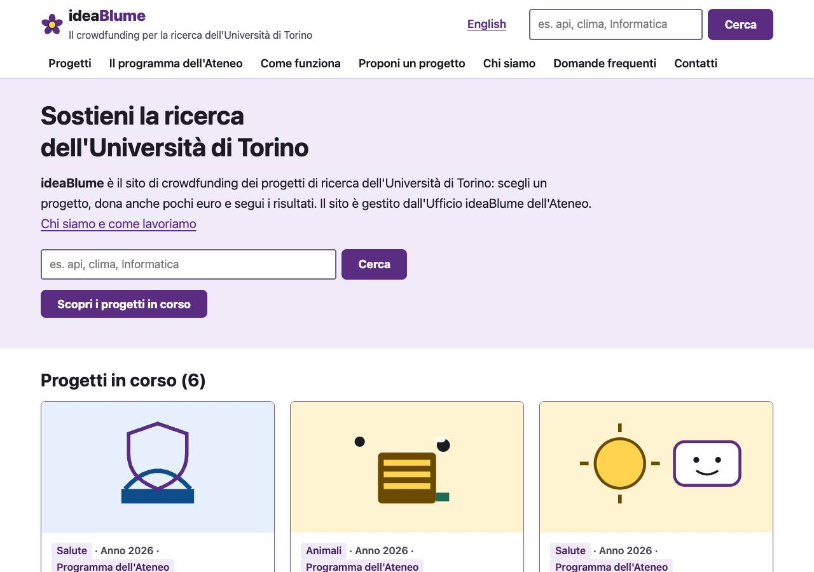
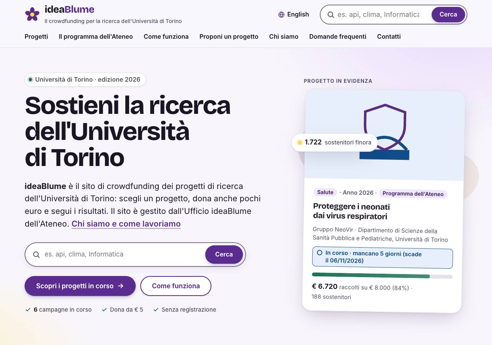
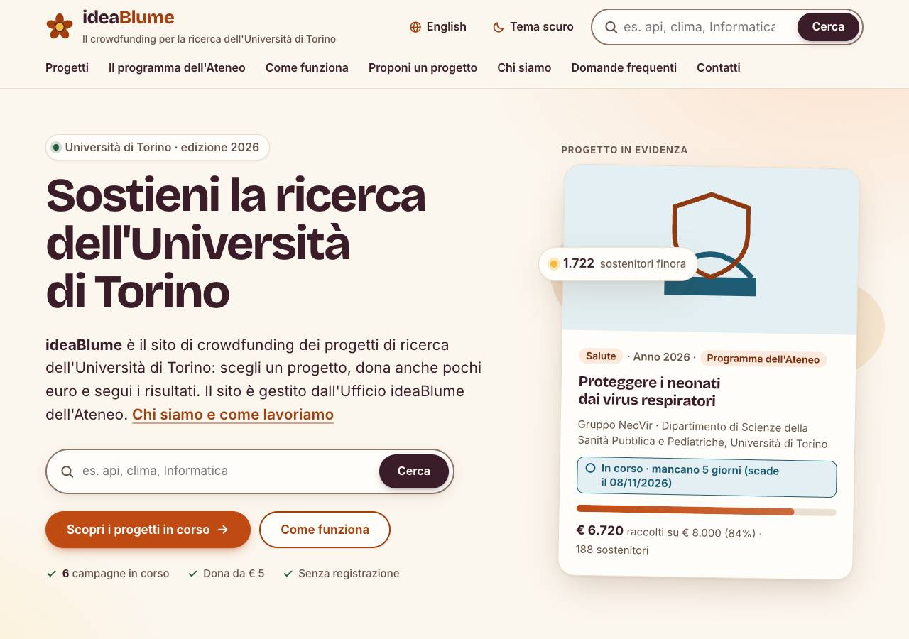
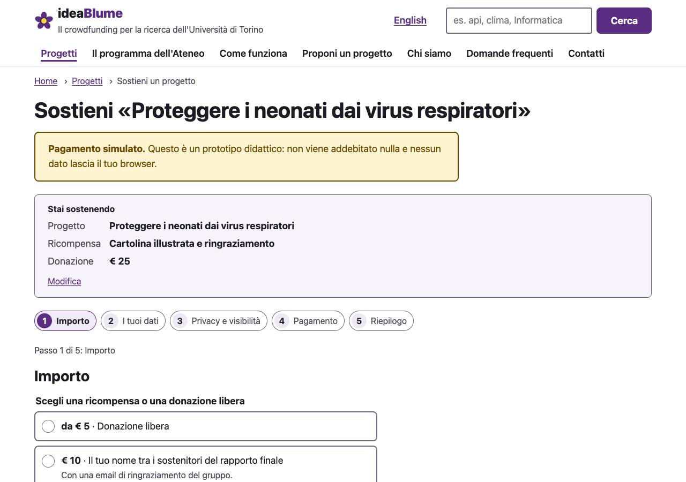
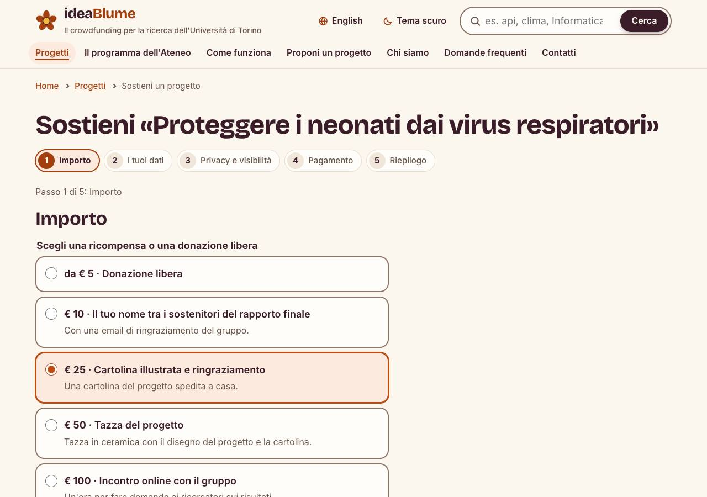
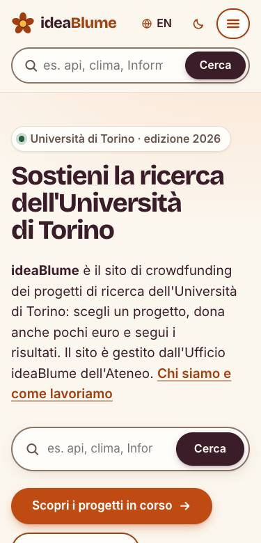
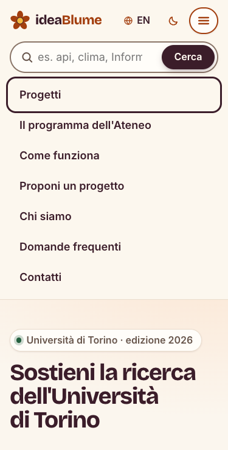
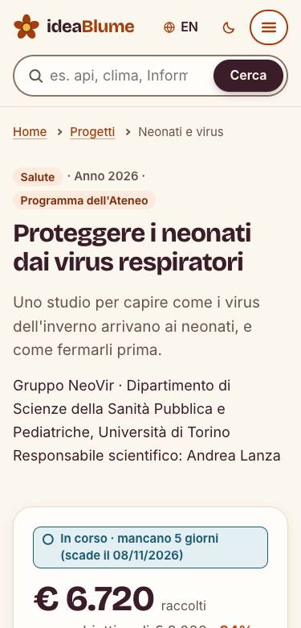
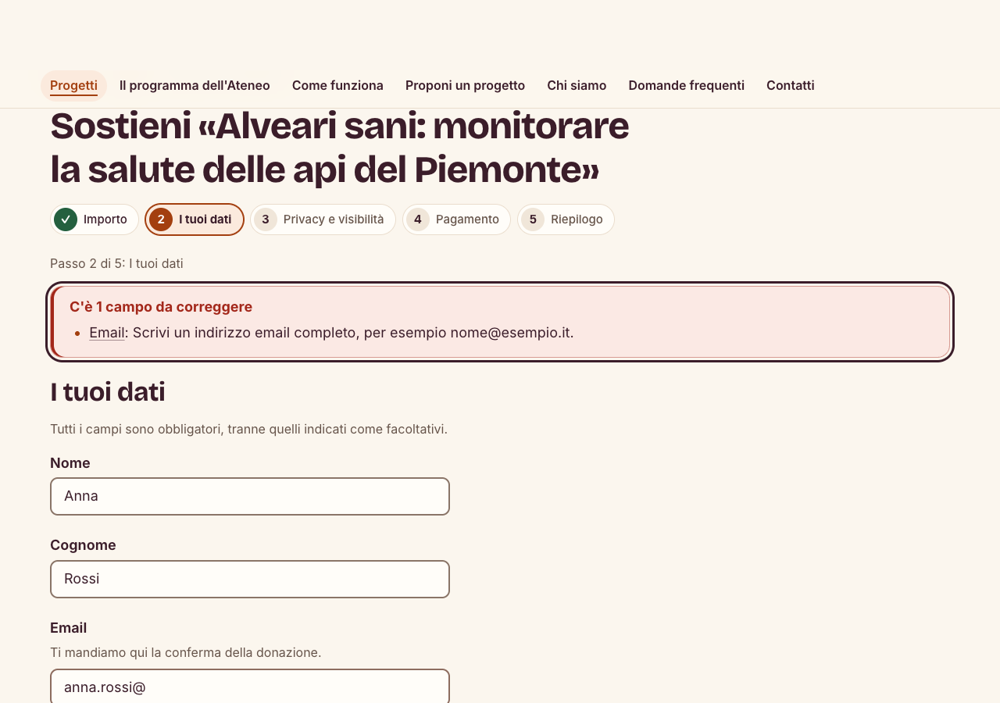
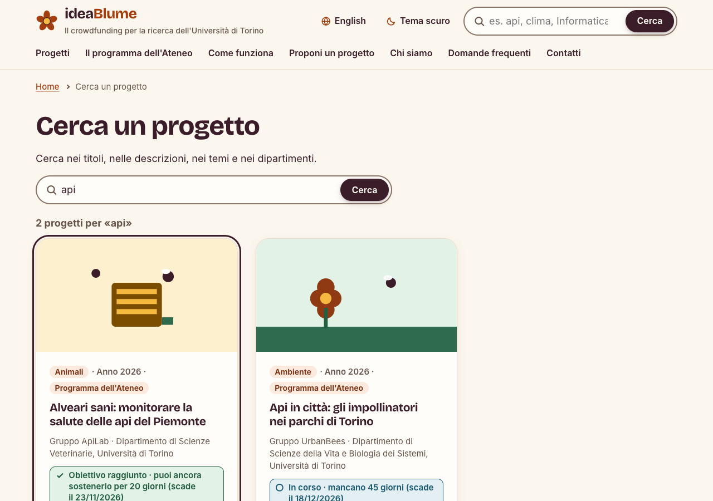

1Introduzione
Con assignment 2 abbiamo progettato ideaBlume, un sito di crowdfunding per i progetti di ricerca dell'Università di Torino, ripartendo dalla valutazione euristica di IdeaGinger svolta in assignment 1 e sulla base dell'iniziativa Funds TOgether. Il lavoro ha avuto due fasi: prima 12 proto-personas per un servizio generico di crowdfunding e 12 user journey, che mostrano le difficoltà su IdeaGinger (As-is) e i miglioramenti su ideaBlume (To-be), poi un sito statico di 25 pagine, di cui 10 schede di progetto, in italiano e in inglese.
Il sito è stato creato mettendo nel contesto dell'IA, oltre alle personas e agli user journey, anche le problematiche relative al sito che abbiamo trovato nell'assignment 1.
Il sito è pubblicato su https://andreock.github.io/hci_gruppo_a/.
2Le personas
Dopo l'analisi di IdeaGinger abbiamo costruito 12 proto-personas pensate per un servizio generico di crowdfunding, non per IdeaGinger: descrivono persone con obiettivi ed esigenze proprie, e i problemi trovati nella valutazione euristica entrano come loro difficoltà, senza citare il sito. P10–P12 restano generiche nei bisogni, ma sono collocate sul sito di crowdfunding dell'Ateneo. Le personas non derivano da interviste o osservazioni con utenti, ma dallo studio dei potenziali utenti del servizio. Riportiamo il testo delle schede compilate sui template del corso, con un'impaginazione uniforme. Dati, nomi e scenari sono fittizi. La matrice che ne mostra la differenziazione è in §5.6.
2.1P01 · Giuseppe Ferrero
Nome convenzionale e descrizione del profilo
Giuseppe Ferrero, 71 anni, insegnante di scienze in pensione, vive a Moncalieri. È vedovo, ha una figlia e due nipoti; è curioso, generoso e prudente con il denaro.
Scenario e obiettivo principale
Dopo aver letto sul giornale di una ricerca per proteggere i neonati dai virus, pensa alla nipote nata prematura. Vuole donare 50 € e capire con certezza chi riceverà il denaro e come sarà usato.
Attività e comportamenti
- Cura ogni giorno un piccolo orto e frequenta la bocciofila.
- Fa volontariato in parrocchia e preferisce forme di aiuto concrete.
- Legge ogni mattina il quotidiano locale cartaceo.
- Usa il tablet soprattutto per messaggi, email, meteo e giornale online.
- Prima di una spesa insolita confronta le informazioni e chiede un secondo parere.
- Non ha mai sostenuto una campagna di crowdfunding.
Bisogni e aspettative
- Capire subito chi gestisce il servizio e quale scopo ha.
- Trovare spiegazioni in italiano semplice, senza gergo non necessario.
- Leggere importi, scadenze e stato della raccolta senza ambiguità.
- Sapere come saranno usati i fondi e che cosa accade dopo la donazione.
- Ricevere una conferma chiara e poter contattare una persona.
Obiettivi e motivazioni
- Sostenere una ricerca che sente vicina alla storia della famiglia.
- Fare una donazione utile senza esporsi a rischi non compresi.
- Verificare che il promotore sia affidabile.
- Conservare una prova della donazione.
Difficoltà e frustrazioni
- Si affatica quando i testi sono piccoli o poco contrastati.
- I bersagli piccoli lo costringono a ripetere il tocco.
- Si insospettisce se non comprende subito che cosa offre un sito.
- Non conosce parole inglesi tipiche del crowdfunding.
- Percentuali oltre il 100% e giorni con segno negativo gli sembrano errori.
- Teme di scoprire soltanto alla fine di aver compilato male un pagamento.
- Non ritrova nel concetto di «ricompensa» il suo modello di offerta o bonifico.
Contesto e vincoli di utilizzo
Usa a casa un tablet Android da 10 pollici, con carattere ingrandito; non possiede un computer. È la prima visita e potrebbe donare una o due volte l'anno. Procede senza fretta, ma interrompe il percorso per telefonare alla figlia o fotografare lo schermo per farsi guidare.
Competenze e strumenti digitali
- Tablet Android, WhatsApp, email, app meteo e giornale online.
- Ha effettuato pagamenti online solo con l'aiuto della figlia.
- Sa cercare informazioni e confrontarle, ma non riconosce sempre le convenzioni dei moduli online.
- Familiarità digitale: 2/5.
Esigenze di accessibilità
La presbiopia richiede caratteri ingranditi, contrasto elevato e spaziatura leggibile. I bersagli ampi e ben distanziati riducono i tocchi involontari. Usa occhiali da lettura e l'ingrandimento del tablet.
Frase rappresentativa
- «Aiuto volentieri, ma prima voglio capire dove vanno i soldi.»
-
Fonti ed evidenze disponibili
Proto-persona costruita dal gruppo a partire da problemi di usabilità ricorrenti nelle app di crowdfunding. Non sono state svolte interviste o osservazioni dirette con utenti.
Ipotesi da verificare e informazioni mancanti
- Verificare se preferisca davvero il supporto telefonico rispetto a una guida passo passo.
- Capire quali segnali di affidabilità considera sufficienti prima di pagare.
- In un'intervista: come interpreta una raccolta che supera il 100%?
- In un'intervista: quali informazioni vorrebbe conservare dopo la donazione?
2.2P02 · Sara Colombo
Nome convenzionale e descrizione del profilo
Sara Colombo, 34 anni, infermiera turnista in pronto soccorso a Torino. Convive con il compagno e un gatto; è pragmatica, solidale e attenta ai temi ambientali.
Scenario e obiettivo principale
Durante una pausa di dieci minuti vede sui social il progetto di ricerca sul clima condiviso da un'amica dottoranda. Vuole donare 20 € prima di tornare in reparto, con pochi passaggi.
Attività e comportamenti
- Lavora su turni, anche di notte, e organizza la giornata in finestre brevi.
- Corre al parco quando riesce e la sera guarda serie televisive.
- Segue profili di divulgazione scientifica e ambientale sui social.
- Usa home banking, app di consegne e l'app dei turni.
- Non legge istruzioni lunghe: prova un'azione e corregge in base al feedback.
- Ha già fatto due donazioni a raccolte fondi online.
Bisogni e aspettative
- Capire rapidamente scopo, affidabilità e stato del progetto.
- Completare una donazione in pochi passaggi.
- Poter scegliere subito un importo libero, senza ricompense obbligatorie.
- Ricevere errori immediati, specifici e facili da correggere.
Obiettivi e motivazioni
- Sostenere concretamente una causa ambientale segnalata da una persona fidata.
- Donare entro la fine della pausa senza distrarsi dal lavoro.
- Limitare l'importo a 20 € e mantenere il controllo della spesa.
- Ricevere una conferma che chiuda il compito senza dubbi.
Difficoltà e frustrazioni
- La rete debole e il telefono datato rendono frustrante la navigazione delle pagine pesanti.
- Perde facilmente l'attenzione se ci sono troppe informazioni nella pagina.
- Non capisce subito se può donare liberamente senza scegliere una ricompensa.
- Si irrita quando un pulsante non dà feedback e sembra non rispondere.
- Gli errori mostrati solo alla fine consumano il poco tempo disponibile.
Contesto e vincoli di utilizzo
Consulta le campagne dallo smartphone Android durante pause di 2-5 minuti, spesso con una sola mano, stanca e con 4G debole. Il telefono ha quattro anni e memoria quasi piena. Se interrotta, può riprendere la sera dal laptop di casa.
Competenze e strumenti digitali
- Smartphone Android, social network, messaggistica, home banking, consegne e gestione turni.
- Laptop domestico usato soprattutto la sera.
- Procede per tentativi e si aspetta interazioni simili alle app quotidiane.
- Familiarità digitale: 3.5/5.
Esigenze di accessibilità
Limitazioni situazionali: pause brevi, stanchezza dopo il turno notturno, attenzione divisa e una mano spesso occupata. Servono controlli grandi, contenuti essenziali, caricamento rapido e salvataggio dello stato.
Frase rappresentativa
- «Se mi fido, voglio poter donare prima che finisca la pausa.»
Fonti ed evidenze disponibili
Proto-persona costruita dal gruppo a partire da problemi di usabilità ricorrenti nelle app di crowdfunding. Non sono state svolte interviste o osservazioni dirette con utenti.
Ipotesi da verificare e informazioni mancanti
- Verificare se salverebbe una campagna per riprenderla più tardi.
- Capire quale metodo di pagamento usa più spesso da smartphone.
- In un'intervista: quanto tempo dedica a controllare l'affidabilità di un link social?
- In un'intervista: quale feedback le fa capire che un pulsante sta elaborando la richiesta?
2.3P03 · Davide Rinaldi
Nome convenzionale e descrizione del profilo
Davide Rinaldi, 39 anni, funzionario amministrativo in un ente pubblico a Torino. Vive con la compagna e un cane guida; è autonomo, analitico e impegnato per il diritto allo studio.
Scenario e obiettivo principale
Dalla mailing list di un'associazione scopre una ricerca sulla matematica accessibile alle persone cieche. Vuole sostenerla; se la raccolta è conclusa, cerca un altro progetto attivo e dona 30 € usando soltanto tastiera e screen reader.
Attività e comportamenti
- Lavora ogni giorno con documenti e servizi digitali della pubblica amministrazione.
- Fa volontariato in un'associazione per l'accessibilità dell'istruzione.
- Ascolta audiolibri e podcast con sintesi vocale ad alta velocità.
- Nel fine settimana pratica ciclismo in tandem.
- Dona online tre o quattro volte l'anno a progetti su accessibilità e istruzione.
- Valuta l'affidabilità di un servizio anche sull'attenzione all'accessibilità dell'interfaccia.
Bisogni e aspettative
- Navigare per titoli, landmark e link con una struttura prevedibile.
- Ottenere nomi, ruoli e stati accessibili per ogni controllo.
- Capire in modo testuale se una campagna è attiva o conclusa.
- Ricevere descrizioni informative delle immagini rilevanti.
- Individuare e correggere gli errori senza cercarli in tutta la pagina.
Obiettivi e motivazioni
- Sostenere progetti coerenti con autonomia, inclusione e diritto allo studio.
- Completare la donazione senza assistenza esterna.
- Trovare un'alternativa valida se la prima campagna è conclusa.
- Segnalare al proprio gruppo problemi e buone pratiche di accessibilità.
Difficoltà e frustrazioni
- Immagini non descritte e titoli vuoti rendono incomprensibile il contenuto.
- Controlli senza nome accessibile interrompono il percorso.
- Colori o simboli privi di testo non comunicano lo stato della campagna.
- Menu non gestibili da tastiera possono intrappolare il focus.
- Tornando all'elenco perde tempo se la posizione non viene conservata.
- Link tutti uguali o parole duplicate rendono rumorosa la sintesi vocale.
- Un errore mostrato lontano dal campo richiede una ricerca faticosa.
Contesto e vincoli di utilizzo
A casa usa PC Windows, Firefox e NVDA; fuori casa usa iPhone con VoiceOver. È la prima visita sull'app, ma dona online più volte l'anno. Usa solo tastiera e sintesi vocale, spesso a velocità elevata, e interrompe presto percorsi non accessibili.
Competenze e strumenti digitali
- NVDA e VoiceOver; navigazione per titoli con il tasto H, landmark ed elenco dei link.
- PC Windows con Firefox e iPhone.
- Usa scorciatoie da tastiera, ricerca testuale e sintesi vocale ad alta velocità.
- Familiarità digitale: 5/5 con le tecnologie assistive.
Esigenze di accessibilità
Cieco dalla nascita, usa esclusivamente tastiera e sintesi vocale. Ha bisogno di HTML semantico, ordine del focus coerente, etichette e stati annunciati, alternative testuali pertinenti e messaggi di errore associati ai campi.
Frase rappresentativa
- «L'accessibilità mi permette di scegliere, non soltanto di entrare.»
Fonti ed evidenze disponibili
Proto-persona costruita dal gruppo a partire da problemi di usabilità ricorrenti nelle app di crowdfunding. Non sono state svolte interviste o osservazioni dirette con utenti.
Ipotesi da verificare e informazioni mancanti
- Verificare quali problemi determinano l'abbandono immediato e quali vengono aggirati.
- Capire se preferisca cercare per testo, filtri o intestazioni.
- In un'intervista: quali informazioni aumentano la fiducia in un progetto?
- In un test: il percorso è completabile con tastiera e screen reader senza aiuto?
2.4P04 · Tomás García
Nome convenzionale e descrizione del profilo
Tomás García, 31 anni, data analyst in una società di consulenza a Madrid. Single, vive in un appartamento condiviso con un amico. Ex studente Erasmus a Torino, tiene molto alle amicizie internazionali, all'impegno per il clima e alla trasparenza.
Scenario e obiettivo principale
Un ex compagno di corso, oggi ricercatore in Italia, gli manda il link a un progetto di ricerca sul clima su un'app di crowdfunding italiana. Tomás vuole capire il progetto e le regole, donare 50 € e coinvolgere gli amici dell'Erasmus, molti dei quali non parlano italiano.
Attività e comportamenti
- Lavora tutto il giorno su dati e dashboard: è abituato a verificare numeri e fonti prima di fidarsi.
- Il martedì gioca a calcetto; organizza viaggi low cost confrontando voli e tariffe su più siti.
- Segue la politica ambientale europea con newsletter e podcast, quasi sempre in inglese.
- Tiene vivo un gruppo di messaggistica con gli amici dell'Erasmus, sparsi in diversi paesi europei.
- Dona online 3–4 volte l'anno, di solito su piattaforme internazionali, a progetti ambientali o di amici.
- Prima di pagare confronta sempre costi, commissioni e condizioni, come farebbe con un contratto.
Bisogni e aspettative
- Capire che cosa sostiene e con quali regole in una lingua che padroneggia (inglese o spagnolo).
- Sapere prima di pagare quanto spende in totale e che cosa succede se la campagna non raggiunge l'obiettivo.
- Ritrovare le convenzioni a cui è abituato: scelta della lingua ben visibile e riepilogo dei costi.
- Pagare con metodi che riconosce e che funzionano dall'estero.
- Condividere il progetto con amici che non parlano italiano senza doverlo spiegare a ciascuno.
Obiettivi e motivazioni
- Sostenere il lavoro di un amico e mantenere vivo il legame con l'Italia.
- Contribuire alla ricerca sul clima, una causa in cui crede.
- Coinvolgere la rete dell'Erasmus per moltiplicare l'effetto della propria donazione.
- Donare in modo consapevole, sapendo dove finiscono i suoi soldi.
Difficoltà e frustrazioni
- Si perde nelle frasi lunghe e nei termini tecnici se non chiari.
- La sera ha poco tempo ed energia: vuole chiudere le cose in pochi minuti.
- Si irrita con i siti che non riesce a capire per la mancanza della traduzione in inglese.
- Teme il pagamento: un messaggio d'errore lo blocca proprio mentre dona e gli mette ansia che i suoi soldi siano andati persi.
- Diffida di costi e commissioni poco chiari e di metodi di pagamento con nomi che non conosce.
- Si sente spaesato quando un link lo porta su un altro sito senza avvisarlo.
Contesto e vincoli di utilizzo
- Usa le app di crowdfunding la sera, a casa, dal laptop aziendale con il browser in inglese.
- Dallo smartphone apre i link ricevuti in chat e condivide; per pagare preferisce il laptop.
- Dona 3–4 volte l'anno.
- Si affida al traduttore automatico del browser, che però non traduce i testi nelle immagini né i messaggi che compaiono dopo un'azione.
- Usa una rete stabile e dispositivi recenti per navigare.
Competenze e strumenti digitali
- Laptop aziendale, smartphone Android
- Fogli di calcolo e strumenti di analisi dei dati
- App di traduzione sul browser
- App di messaggistica, social network professionale
- Carta di pagamento, wallet digitale, app della banca
- Piattaforme di crowdfunding internazionali
- Familiarità digitale: 5/5
Esigenze di accessibilità
- Esigenza linguistica situazionale: italiano A2, inglese C1, spagnolo madrelingua.
- La traduzione automatica dall'italiano salta immagini e testi che compaiono dopo, e rende male i termini tecnici.
Frase rappresentativa
- «Dono volentieri, ma prima voglio capire cosa sto pagando.»
Fonti ed evidenze disponibili
Proto-persona costruita dal gruppo a partire da problemi di usabilità ricorrenti nelle app di crowdfunding (traduzioni parziali, costi poco chiari, errori nel modulo di pagamento). Non c'è ricerca diretta con utenti.
Ipotesi da verificare e informazioni mancanti
- Da verificare: quanto i donatori dall'estero usano il traduttore del browser e quanto si fidano del risultato.
- Da verificare: se il timore di commissioni nascoste porta ad abbandonare la donazione prima del pagamento.
- Domande per l'intervista: «Racconti l'ultima volta che ha donato su un sito in una lingua che non conosce bene: che cosa l'ha fatta esitare?» · «Prima di pagare, quali informazioni cerca e dove si aspetta di trovarle?»
2.5P05 · Luca Moretti
Nome convenzionale e descrizione del profilo
Luca Moretti, 52 anni, elettricista e titolare di una piccola impresa con due dipendenti ad Asti. Sposato con due figli: il maggiore studia all'università. Concreto e preciso, vuole aiutare chi è più indietro e sostenere il suo territorio.
Scenario e obiettivo principale
Ha deciso di dare 100 € a un progetto di ricerca universitario che raccoglie fondi con il crowdfunding. Vuole confrontare con calma le campagne, scegliere quella che ne ha più bisogno, possibilmente con ricadute sul territorio, e poi seguirne l'andamento nelle settimane successive.
Attività e comportamenti
- Lavora molte ore tra cantieri e ufficio; segue lui la contabilità dell'impresa, con fatturazione elettronica e home banking.
- La domenica esce in mountain bike sulle colline intorno ad Asti.
- È nel direttivo della pro loco del paese: organizza feste e raccolte fondi per iniziative locali.
- Tiene i conti di casa su un foglio di calcolo e prende appunti su carta prima di ogni spesa importante.
- Fa 2–3 donazioni l'anno online: prima confronta a lungo, poi torna a controllare come vanno le campagne.
- Si informa sul giornale locale e chiede al figlio universitario un parere sui temi di ricerca.
Bisogni e aspettative
- Capire a colpo d'occhio, senza dover distinguere i colori, quali campagne sono in corso, concluse o già finanziate.
- Confrontare più progetti tra loro senza perdere il segno.
- Sapere subito di che cosa tratta un progetto e se riguarda il suo territorio.
- Leggere cifre e scadenze chiare e confrontabili, per capire quanto manca davvero.
- Vedere che effetto ha avuto la sua donazione.
Obiettivi e motivazioni
- Dare 100 € al progetto che ne ha più bisogno, non a quello già arrivato.
- Sostenere una ricerca con ricadute concrete sul territorio.
- Aiutare chi è più indietro, come fa con la pro loco.
- Seguire la campagna nelle settimane successive per vedere se ce la fa.
Difficoltà e frustrazioni
- Durante la settimana ha poco tempo: alle donazioni dedica il sabato mattina, a impresa chiusa.
- Con il digitale è lento ma meticoloso; quando qualcosa non torna si ferma e ricomincia da capo.
- Si spazientisce quando non può mettere filtrare i progetti per capire chi non è ancora arrivato all'obiettivo.
- Ogni volta che torna all'elenco riparte dall'inizio e deve ritrovare il punto in cui era.
- Deve aprire un progetto dopo l'altro solo per capire di che cosa parla.
- Cifre e scadenze ambigue, come giorni con il segno meno o obiettivi che cambiano, gli rendono impossibile un confronto onesto.
Contesto e vincoli di utilizzo
- Usa le app di crowdfunding soprattutto il sabato mattina dal PC desktop con monitor da 24 pollici.
- Visite lunghe di confronto (30–40 minuti), con un foglio di carta o il foglio di calcolo accanto.
- Dallo smartphone fa solo controlli veloci nelle settimane successive.
- Uso ricorrente: 2–3 donazioni l'anno e controlli periodici delle campagne sostenute.
- Vincolo principale: deve tenere a mente molte cifre mentre passa da un progetto all'altro.
Competenze e strumenti digitali
- PC desktop Windows con monitor da 24 pollici
- Smartphone iPhone per controlli veloci
- Software di fatturazione elettronica, home banking
- Foglio di calcolo per i conti di casa
- Acquisti online
- Taccuino e penna per gli appunti
- Familiarità digitale: 4/5
Esigenze di accessibilità
- Daltonismo (deuteranopia), permanente: distingue con difficoltà verde, rosso e arancione.
- Legge bene testi e numeri: la difficoltà nasce solo quando un'informazione è affidata al colore.
- Strategie: cerca etichette scritte e numeri e confronta le percentuali.
- Si trova meglio con testo scuro su sfondo chiaro e ben contrastato.
Frase rappresentativa
- «Prima di dare un euro, voglio capire chi ne ha davvero bisogno.»
Fonti ed evidenze disponibili
Proto-persona costruita dal gruppo a partire da problemi di usabilità ricorrenti nelle app di crowdfunding (stato delle campagne affidato al colore, assenza di filtri, cifre e scadenze ambigue). Non c'è ricerca diretta con utenti.
Ipotesi da verificare e informazioni mancanti
- Da verificare: quanto spesso i donatori metodici annotano cifre fuori dall'app per confrontare i progetti.
- Da verificare: quanto le persone con daltonismo si affidano a etichette e percentuali anziché al colore.
- Domande per l'intervista: «Come ha scelto l'ultimo progetto a cui ha donato? Che cosa ha confrontato?» · «Dopo aver donato, come controlla com'è andata la campagna?»
2.6P06 · Elena Conti
Nome convenzionale e descrizione del profilo
Elena Conti, 58 anni, commercialista con studio proprio a Torino, zona Crocetta. Divorziata, una figlia medico specializzando. Rigorosa e riservata, per lei trasparenza e riservatezza vengono prima di tutto.
Scenario e obiettivo principale
Un'ex compagna di università le racconta che il loro ateneo raccoglie fondi per la ricerca con il crowdfunding. A dicembre vuole destinare 300 €, ma solo se servizio e programma sono affidabili e trasparenti, se può restare anonima e se ottiene una ricevuta.
Attività e comportamenti
- Lunghe giornate in studio tra dichiarazioni, scadenze e clienti; lavora con software gestionali, portali fiscali e PEC.
- Il giovedì sera va al corso di yoga
- è abbonata alla stagione del teatro.
- Fa volontariato per una piccola onlus: ne segue bilancio e rendicontazione.
- Dona una volta l'anno, a dicembre, a enti di ricerca, dopo aver controllato chi sono e come usano i fondi.
- Legge sempre condizioni d'uso, informative sulla privacy e note prima di firmare o pagare.
- Si informa sui quotidiani e attraverso la rete di colleghi; chiede alla figlia un parere sui temi medici.
Bisogni e aspettative
- Sapere con certezza chi gestisce il servizio e chi c'è dietro ogni progetto.
- Trovare date, cifre e regole coerenti tra le pagine, chiamate sempre con lo stesso nome.
- Avere il controllo sui propri dati: decidere che cosa diventa pubblico e che cosa riceve il promotore.
- Ottenere una ricevuta valida e capire se la donazione è detraibile.
- Avere un contatto diretto a cui fare domande.
Obiettivi e motivazioni
- Destinare 300 € alla ricerca dell'università in cui si è laureata.
- Restituire qualcosa all'ambiente che l'ha formata.
- Donare entro la fine dell'anno, documentando tutto correttamente.
- Sostenere la ricerca senza esporre il proprio nome.
Difficoltà e frustrazioni
- A dicembre le scadenze di studio si accumulano: alla donazione può dedicare solo la fine della giornata.
- È alla prima esperienza con il crowdfunding e non ne conosce le regole tipiche.
- Perde fiducia quando non capisce chi gestisce un servizio, le date mancano e i numeri di una stessa pagina non tornano.
- Si irrita quando regole e costi sono sparsi in pagine diverse e la stessa cosa ha nomi diversi.
- Teme che i suoi dati diventino pubblici o arrivino ad altri senza che le sia stato detto chiaramente.
- Non sopporta di dover cercare a lungo come ottenere una ricevuta e se la donazione è detraibile.
- Vuole sapere chi c'è dietro un progetto e a chi rivolgersi.
Contesto e vincoli di utilizzo
- Usa il PC desktop dello studio, a fine giornata: su un monitor legge le pagine, sull'altro tiene aperte condizioni e FAQ.
- Lo smartphone le serve solo per email e telefonate; non lo usa per donare.
- Dona una volta l'anno, a dicembre, con una visita lunga e accurata, anche in più sessioni.
- Prima volta con il crowdfunding: non ha ancora un modello mentale di come funziona.
- Vincoli: poco tempo a fine anno e la data del 31 dicembre per la documentazione fiscale.
Competenze e strumenti digitali
- PC desktop con due monitor
- Smartphone per email e telefonate
- Software gestionali e portali fiscali
- Posta elettronica certificata (PEC)
- Familiarità digitale: 4/5
Esigenze di accessibilità
- Nessuna esigenza specifica.
- Porta occhiali progressivi: a fine giornata preferisce testi di dimensione adeguata e ben contrastati.
- Strategia: ingrandisce la pagina del browser quando i caratteri sono piccoli.
Frase rappresentativa
- «Prima di donare leggo tutto: se qualcosa non torna, non dono.»
Fonti ed evidenze disponibili
Proto-persona costruita dal gruppo a partire da problemi di usabilità ricorrenti nelle app di crowdfunding (gestore del servizio poco evidente, numeri incoerenti, regole sparse, privacy e ricevute poco chiare). Non c'è ricerca diretta con utenti.
Ipotesi da verificare e informazioni mancanti
- Da verificare: quanto la coerenza di date e numeri influenza la fiducia di chi dona per la prima volta.
- Da verificare: quanti donatori scelgono l'anonimato e sanno quali dati riceve comunque il promotore.
- Domande per l'intervista: «Che cosa le serve vedere per fidarsi di un servizio di raccolta fondi che non conosce?» · «Quali documenti si aspetta di ricevere dopo una donazione?»
2.7P07 · Giulia Esposito
Nome convenzionale e descrizione del profilo
Giulia, 20 anni, è una studentessa fuorisede di Biotecnologie a Torino, originaria di Salerno. Vive con due coinquiline. È interessata a iniziative vicine ai suoi studi, ma non ha mai sostenuto un progetto di crowdfunding.
Scenario e obiettivo principale
Sul tram verso l'università vede una storia su Instagram dedicata a una raccolta per la ricerca. Vuole trovare un progetto affine ai suoi interessi, donare una piccola cifra e condividerlo con il gruppo di studio.
Attività e comportamenti
- Scopre iniziative tramite Instagram e le condivide su WhatsApp.
- Scorre velocemente da iPhone e cerca titoli chiari, grassetti e immagini esplicative.
- Usa la lettura vocale di iOS quando i testi sono densi.
- Confronta gli importi prima di confermare un pagamento.
- Considera utile anche una donazione piccola se può far conoscere il progetto.
Bisogni e aspettative
- Capire subito di che cosa tratta l'iniziativa e perché è affidabile.
- Individuare facilmente i progetti attivi legati alla ricerca.
- Leggere informazioni brevi, strutturate e comprensibili.
- Conoscere l'importo minimo prima di arrivare al pagamento.
Obiettivi e motivazioni
- Sostenere una ricerca coerente con il proprio percorso di studi.
- Restare entro un budget di 5–10 €.
- Condividere il progetto con compagne e compagni.
- Concludere il sostegno senza dubbi sull'importo o sul pagamento.
Difficoltà e frustrazioni
- Se la pagina iniziale non chiarisce lo scopo dell'iniziativa, teme di essere nel posto sbagliato.
- Si disorienta quando i contenuti più utili non sono visibili subito.
- Trova faticosi titoli incompleti, etichette ambigue e parole tecniche non spiegate.
- Nei testi lunghi senza sezioni perde il punto, anche usando la lettura vocale.
- Si sente scoraggiata se scopre il minimo donabile solo dopo aver inserito una cifra.
Contesto e vincoli di utilizzo
- Usa il telefono sul tram e nelle pause tra le lezioni, spesso con una sola mano libera.
- Fa una prima visita breve; può tornare se riceve un promemoria o il suggerimento di un'amica.
- Ha una connessione mobile e alterna momenti di attenzione a piccole interruzioni.
Competenze e strumenti digitali
- 4/5 nell'uso di social e app; minore confidenza con moduli complessi e testi molto lunghi.
- Usa un iPhone e regolarmente naviga tramite Safari e si tiene in contatto con le persone tramite Instagram e WhatsApp.
- Sa verificare un link, condividere contenuti e attivare la lettura vocale.
Esigenze di accessibilità
- Ha un DSA: i blocchi di testo lunghi, i caratteri piccoli e il lessico poco familiare aumentano lo sforzo di lettura.
- La aiutano testi ben scanditi, parole semplici, punti chiave evidenziati e contenuti ascoltabili.
- Queste esigenze non limitano la sua familiarità con gli strumenti digitali.
Frase rappresentativa
«Se capisco subito a cosa serve, anche cinque euro e un link contano.»
Fonti ed evidenze disponibili
Proto-persona costruita dal gruppo a partire da problemi di usabilità ricorrenti nelle app di crowdfunding (stato delle campagne affidato al colore, assenza di filtri, cifre e scadenze ambigue). Non c'è ricerca diretta con utenti.
Ipotesi da verificare e informazioni mancanti
- Da verificare: quanto l'indice e il linguaggio semplice facilitino la lettura per studentesse e studenti con DSA.
- Da verificare: se la condivisione contribuisca a far conoscere i progetti anche quando la donazione è piccola.
- Domande per l'intervista: «Che cosa ha guardato per decidere se fidarsi l'ultima volta che ha aperto il link di una raccolta fondi?» · «Quando un testo online è lungo o difficile, che cosa fa per riuscire a capirlo?»
2.8P08 · Roberta Galli
Nome convenzionale e descrizione del profilo
Roberta, 47 anni, vive a Torino, è giornalista scientifica freelance, sposata e madre di due figli. Lavora soprattutto da casa e cerca fonti solide per raccontare la ricerca al pubblico.
Scenario e obiettivo principale
In una settimana deve ricostruire le precedenti edizioni dell'iniziativa: progetti, risultati e persone coinvolte. Vuole pubblicare un articolo accurato, con dati verificabili e collegamenti affidabili.
Attività e comportamenti
- Apre molte schede e annota dati in un foglio di calcolo.
- Alterna ricerca sul sito, email e telefonate.
- Confronta numeri e date prima di citarli.
- Riprende il lavoro dopo alcune interruzioni.
- Cerca di coprire l'insieme dei progetti, non soltanto quelli trovati per primi.
Bisogni e aspettative
- Capire a quale edizione e periodo si riferiscono dati e pagine.
- Visualizzare tutti i progetti conclusi con filtri, ordinamento e stato finale.
- Conservare posizione e risultati mentre approfondisce una scheda.
- Disporre di fonti e contatti chiaramente attribuiti.
Obiettivi e motivazioni
- Pubblicare un articolo accurato e contestualizzato.
- Verificare numeri, gruppi di ricerca e risultati.
- Intervistare almeno una fonte competente.
- Offrire ai lettori collegamenti chiari e affidabili.
Difficoltà e frustrazioni
- Non riesce a contestualizzare le informazioni quando date e riferimenti temporali sono assenti.
- Perde fiducia se valori simili non coincidono tra le pagine o non indicano una fonte.
- Ha difficoltà a capire se ha visto tutti i progetti quando l'elenco si carica progressivamente.
- Perde il punto dopo un'interruzione se, tornando indietro, lista e filtri non vengono mantenuti.
- Una pagina lunga senza strumenti di orientamento rallenta il confronto tra più progetti.
- Non sa a chi rivolgersi se il contatto non è chiaro o non riceve alcun riscontro.
Contesto e vincoli di utilizzo
- Lavora in sessioni lunghe, due o tre volte nella stessa settimana, da laptop.
- Gestisce una scadenza editoriale, telefonate e interruzioni frequenti.
- Usa foglio di calcolo, sistema editoriale della testata, email e telefono.
Competenze e strumenti digitali
- Fa spesso Ricerca avanzata, archivi online e verifica delle fonti.
- Usa un laptop con molte schede aperte e lo smartphone per foto e telefonate.
- Sa ricostruire percorsi informativi complessi, ma si aspetta che le informazioni essenziali siano disponibili e coerenti.
- Familiarità digitale: 4/5.
Esigenze di accessibilità
- Non ha esigenze permanenti specifiche.
- Il vincolo principale è l'attenzione divisa: dopo una telefonata o una consegna urgente deve poter riprendere facilmente il lavoro.
Frase rappresentativa
«Se non posso ricostruire la fonte, non posso pubblicare l'articolo.»
Fonti ed evidenze disponibili
Proto-persona costruita dal gruppo a partire da problemi di usabilità ricorrenti nelle app di crowdfunding (stato delle campagne affidato al colore, assenza di filtri, cifre e scadenze ambigue). Non c'è ricerca diretta con utenti.
Ipotesi da verificare e informazioni mancanti
- Da verificare: se filtri per edizione e strumenti di esportazione riducano la verifica manuale.
- Da verificare: in che modo le persone ritrovino una ricerca interrotta.
- Domande per l'intervista: «Quali informazioni le servono per citare correttamente risultati e fonti di un progetto?» · «Racconti l'ultima volta che ha dovuto riprendere una ricerca interrotta: come ha ritrovato il punto in cui era?»
2.9P09 · Chiara Marino
Nome convenzionale e descrizione del profilo
Chiara, 32 anni, vive a Torino con il compagno ed è assegnista in ecologia. Vorrebbe finanziare i campionamenti di un progetto sugli impollinatori urbani, ma non ha mai gestito una campagna di crowdfunding.
Scenario e obiettivo principale
In tre sere dopo il laboratorio, dopo aver sentito parlare dell'iniziativa in riunione, cerca requisiti, scadenze, costi e un referente. Vuole capire con certezza se può candidarsi e quale sia il primo passo.
Attività e comportamenti
- Legge a pezzi tra laboratorio, campionamenti e didattica.
- Cerca bandi, requisiti e modulistica in email e siti istituzionali.
- Annota dubbi e confronta le informazioni trovate.
- Cerca un contatto prima di investire tempo nella candidatura.
- Torna sulle pagine nelle sere successive.
Bisogni e aspettative
- Conoscere requisiti, scadenza, documenti necessari e ufficio responsabile.
- Distinguere il percorso di candidatura dalla semplice creazione di un account.
- Capire termini, impegno richiesto e costi prima di iniziare.
- Riprendere facilmente la lettura tra una sessione e l'altra.
Obiettivi e motivazioni
- Valutare la candidatura del progetto su cui sta lavorando.
- Capire se la modalità di finanziamento è sostenibile per il gruppo di ricerca.
- Avviare il percorso appropriato senza errori.
- Parlare con un referente e preparare le prime bozze della proposta.
Difficoltà e frustrazioni
- Non sa se è ancora in tempo quando scadenze e requisiti non sono subito visibili.
- Si disorienta se non è chiaro chi segue il programma e a chi chiedere informazioni.
- Le guide lunghe, senza indice o con testi piccoli, sono difficili da consultare nelle sue brevi sessioni serali.
- Il gergo promozionale e termini diversi per la stessa attività le fanno dubitare di avere capito bene.
- La scoperta tardiva di eventuali costi la irritano.
Contesto e vincoli di utilizzo
- Usa un laptop macOS con Safari; consulta l'email dall'iPhone.
- Fa una prima esplorazione e, se interessata, lavorerà intensamente alla candidatura nelle settimane successive.
- Ha poco tempo continuativo e riprende spesso la lettura in più sessioni.
Competenze e strumenti digitali
- Consulta regolarmente banche dati, piattaforme per bandi e social.
- Non ha esperienza di crowdfunding né di marketing.
- Usa abitualmente email, siti istituzionali, telefono e moduli online.
- Familiarità digitale: 4/5.
-
Esigenze di accessibilità
- Non ha esigenze permanenti specifiche.
- Il tempo e l'attenzione frammentati rendono importanti una gerarchia chiara e la continuità tra sessioni.
Frase rappresentativa
«Per candidarmi mi servono requisiti, scadenza e un referente, non solo una registrazione.»
Fonti ed evidenze disponibili
Proto-persona costruita dal gruppo a partire da problemi di usabilità ricorrenti nelle app di crowdfunding (stato delle campagne affidato al colore, assenza di filtri, cifre e scadenze ambigue). Non c'è ricerca diretta con utenti.
Ipotesi da verificare e informazioni mancanti
- Da verificare: se il percorso rispecchi il modo in cui ricercatrici e ricercatori cercano informazioni sui bandi.
- Da verificare: quanto sia utile poter salvare i progressi e riprendere il lavoro in un secondo momento.
- Domande per l'intervista: «Quali dettagli le servono per decidere se iniziare una candidatura?» · «Come organizza il lavoro su un bando quando può dedicargli solo poche sere?»
2.10P10 · Franco Gallo
Nome convenzionale e descrizione del profilo
- Franco Gallo, 63 anni, Torino. Professore ordinario in un dipartimento UniTo di area veterinaria; apicoltore per passione.
- Responsabile scientifico della campagna «AlveareSano» sul sito di crowdfunding dell'Ateneo: è al 130% dell'obiettivo con 20 giorni rimasti.
Scenario e obiettivo principale
- Martedì, tra una seduta di laurea e il consiglio di dipartimento, ha tre minuti: apre la pagina di «AlveareSano» e trova tre email di donatori che chiedono se donare serve ancora, visto che l'obiettivo è superato.
- Obiettivo: tenere viva la raccolta fino alla scadenza, spiegando a che cosa servono i fondi in più e come funziona il cofinanziamento dell'Ateneo; poi rendere conto ai donatori dei risultati.
Attività e comportamenti
- Ogni mattina guarda dal PC dello studio solo percentuale, raccolto e giorni rimasti.
- Delega a un dottorando i testi degli aggiornamenti, le foto e i rapporti con l'ufficio crowdfunding d'Ateneo.
- Presenta il progetto a eventi pubblici e agli incontri con gli apicoltori del territorio.
- Riceve via email e telefono le domande dei donatori e risponde di persona.
- Usa la pagina pubblica del progetto come «biglietto da visita» da inoltrare a colleghi e stampa.
Bisogni e aspettative
- Capire a colpo d'occhio a che punto è la campagna, senza dover interpretare grafici.
- Mostrare ai donatori che la raccolta resta aperta e utile anche oltre il 100%.
- Ricevere meno domande ripetitive: le risposte di base dovrebbero essere già sulla pagina.
Obiettivi e motivazioni
- Raggiungere il secondo obiettivo per finanziare più campionamenti negli apiari.
- Far capire che, con il cofinanziamento dell'Ateneo, raggiungere l'obiettivo vale il doppio.
- Chiudere con una buona immagine del gruppo e dell'Ateneo e tenere i donatori come pubblico per i risultati.
Difficoltà e frustrazioni
- Dubbio: «Come spiego che serve ancora donare, ora che abbiamo superato l'obiettivo?»
- Poco tempo e poca pazienza per imparare uno strumento nuovo: se una cosa richiede più di qualche minuto, la delega o la rimanda.
- Teme che una campagna «al 130%» venga letta come chiusa.
- Si confonde con soglie diverse (primo obiettivo, nuovo obiettivo, cofinanziamento).
- Con la presbiopia fatica a leggere testi piccoli e barre sottili.
Contesto e vincoli di utilizzo
- Studio in dipartimento, PC fisso con monitor da 27 pollici; smartphone solo per email e telefonate.
- Frequenza: quotidiana durante la campagna.
- Attenzione divisa e interrotta: legge solo ciò che salta all'occhio nella parte alta della pagina.
- Molti contatti con il sito sono indiretti: domande di donatori, colleghi e ufficio stampa.
Competenze e strumenti digitali
- Usa con sicurezza email, piattaforme per i bandi e presentazioni ma rallenta se deve imparare un nuovo strumento.
- È esperto nel suo campo e sa raccontare la ricerca al pubblico.
- Use Windows con Microsoft Edge e un iPhone.
- Ha poca familiarità con il crowdfunding: è la sua prima campagna e non ha mai donato online.
- Familiarità digitale 2.5/5
Esigenze di accessibilità
- Presbiopia lieve (permanente): con testi piccoli e contrasti deboli avvicina il viso allo schermo o usa lo zoom del browser al 125%.
- Situazionale: attenzione divisa e pochi minuti per volta; ha bisogno di informazioni riconoscibili a colpo d'occhio.
Frase rappresentativa
- «Siamo al 130%, ma devo spiegare a tutti che serve ancora donare.»
Fonti ed evidenze disponibili
- Proto-persona costruita dal gruppo per il nuovo sito di crowdfunding dell'Università di Torino, a partire dai bisogni emersi nella valutazione euristica dell'Assignment 1, riformulati senza riferimento alla piattaforma analizzata (stato delle campagne, cofinanziamento, contatto con il gruppo, campagne concluse).
Ipotesi da verificare e informazioni mancanti
- Da verificare: quanto una percentuale oltre il 100% venga letta dai donatori come una campagna ormai chiusa.
- Da verificare: se i responsabili scientifici consultino direttamente la pagina o deleghino quasi tutto ai collaboratori.
- Domande per l'intervista: «Che domande le fanno i donatori dopo il 100%?» · «Come racconta ai donatori i risultati a campagna chiusa?»
2.11P11 · Amir Haddad
Nome convenzionale e descrizione del profilo
- Amir Haddad, 27 anni, Torino. Libanese, in Italia da cinque anni; arabo madrelingua, inglese C1, italiano B2.
- Dottorando in Informatica a UniTo; cura la comunicazione del progetto di ricerca «OpenAria».
Scenario e obiettivo principale
- Domenica sera pubblica su LinkedIn e Instagram un post in inglese su «OpenAria»; lunedì mattina trova su WhatsApp lo screenshot di una collega di Beirut ferma a metà donazione sul sito di crowdfunding davanti a un messaggio in italiano.
- Obiettivo: portare donatori dall'estero e far sì che completino la donazione da soli, in una lingua che loro comprendano.
Attività e comportamenti
- Scrive i testi prima in inglese, poi li traduce in italiano con l'aiuto di un collega.
- Condivide il link della campagna su Instagram, LinkedIn e nei gruppi WhatsApp e controlla come si apre da smartphone.
- Naviga quasi solo da tastiera (Tab, scorciatoie, Esc).
- Raccoglie i messaggi dei donatori in difficoltà e li aiuta uno per uno, spesso con screenshot o video tutorial.
- Il venerdì prepara per il gruppo un breve report con i numeri delle campagne social.
Bisogni e aspettative
- Un percorso interamente in inglese per i donatori stranieri, dalla scheda del progetto alla conferma.
- Pagine leggere e chiare da smartphone, perché quasi tutto il suo pubblico arriva dai social.
- Un'interfaccia coerente e usabile da tastiera, con comandi prevedibili.
Obiettivi e motivazioni
- Aumentare i donatori internazionali e ridurre le richieste di aiuto.
- Dare un'immagine professionale al gruppo e all'Ateneo davanti ai colleghi esteri.
- Mettere alla prova le sue competenze di comunicazione, utili per la carriera.
Difficoltà e frustrazioni
- Dubbio: «Un donatore estero capisce le regole e l'importo minimo prima di pagare?»
- Tempo sottratto alla tesi: ogni ora passata ad assistere i donatori è un'ora in meno di ricerca.
- Gli errori spiegati solo in italiano, gli portano richieste di aiuto che potrebbero essere risolte senza sprecare il suo tempo.
- Si irrita con menu e finestre che non si chiudono con Esc o perdono il focus: rallentano chi usa la tastiera.
- Pagine lente e caroselli poco chiari su smartphone fanno sparire chi arriva da Instagram.
- Piccoli difetti (pulsanti senza riscontro, elementi che sembrano link e non lo sono) fanno sembrare la campagna poco professionale.
Contesto e vincoli di utilizzo
- Laboratorio, casa e mezzi pubblici; laptop Linux per scrivere gli articoli e smartphone Android per social e messaggi.
- Non gestisce il sito: prepara i contenuti e segnala i problemi all'ufficio che lo cura.
- Fa da ponte tra il gruppo e i donatori: vede i problemi in prima persona e attraverso i messaggi che riceve.
Competenze e strumenti digitali
- è uno sviluppatore; ispeziona il codice delle pagine e ne misura le prestazioni.
- Ha donato ad alcune campagne online ma è la sua prima campagna da promotore.
- Usa Ubuntu, Firefox con estensioni, Android con Chrome; Instagram, LinkedIn, WhatsApp, Canva.
- Familiarità digitale 5/5
Esigenze di accessibilità
- Usa quasi solo la tastiera per scelta, quindi ha bisogno di focus visibile, Esc funzionante e scorciatoie.
- Linguistica: italiano B2; legge bene ma scrive con qualche incertezza, preferisce scrivere in inglese e far rivedere i testi.
Frase rappresentativa
- «Porto donatori alla campagna: il sito deve essere comprensibile per tutti. »
Fonti ed evidenze disponibili
- Proto-persona costruita dal gruppo per il nuovo sito di crowdfunding dell'Università di Torino, a partire dai bisogni emersi nella valutazione euristica dell'Assignment 1, riformulati senza riferimento alla piattaforma analizzata (lingue, modulo di donazione, uso da smartphone e da tastiera).
Ipotesi da verificare e informazioni mancanti
- Da verificare: quanto il pubblico internazionale completi la donazione se una parte del percorso resta in italiano.
- Da verificare: quanta parte dei donatori arrivi dai social e da smartphone rispetto agli altri canali.
- Domande per l'intervista: «Quanti donatori arrivano dall'estero e dove si fermano?» · «Quanto tempo le richiede scrivere i contenuti in due lingue?»
2.12P12 · Maria Lombardi
Nome convenzionale e descrizione del profilo
- Maria Lombardi, 49 anni, Torino. Impiegata part-time in un'agenzia assicurativa e presidente volontaria di un'associazione di quartiere che gestisce un doposcuola per ragazzi delle medie.
- Esterna all'Università: non può proporre una campagna da sola, ma vuole costruire un progetto insieme ad altre persone.
Scenario e obiettivo principale
- Giovedì sera, dopo la riunione dell'associazione, una volontaria le manda su WhatsApp il link del sito di crowdfunding: «Potremmo fare il laboratorio di scienze con loro!». Maria lo apre dallo smartphone e il giorno dopo continua dal PC dell'associazione.
- Obiettivo: capire se un'associazione può partecipare, a quali condizioni e chi contattare, prima di portare l'idea al direttivo.
Attività e comportamenti
- Organizza da anni cene solidali, lotterie e raccolte di quartiere: sa mobilitare famiglie e commercianti.
- Si informa con il passaparola; decide dopo aver parlato con qualcuno di persona o al telefono.
- Usa WhatsApp e l'email ogni giorno; davanti ai moduli online rallenta e rilegge ogni campo prima di inviare.
- Prende appunti su carta: costi, nomi, numeri da richiamare.
- Porta ogni decisione importante al direttivo dell'associazione.
Bisogni e aspettative
- Capire subito che cos'è il sito e chi c'è dietro, per potersi fidare.
- Sapere che cosa può fare un'associazione, invece di scoprire a metà strada che il percorso non è per lei.
- Poter parlare con una persona quando ha dubbi.
Obiettivi e motivazioni
- Portare nel doposcuola un laboratorio di scienze per aiutare il quartiere.
- Finanziare computer e materiali per il laboratorio (circa 5.000 €) senza esporre l'associazione a spese impreviste.
- Dare ai ragazzi del quartiere un contatto con l'Università.
Difficoltà e frustrazioni
- Dubbio: «Un'associazione può partecipare? O serve per forza un professore?»
- Tempo limitato tra lavoro e volontariato: ogni passaggio in più le fa perdere tempo prezioso.
- Non conosce il mondo universitario: dipartimenti, uffici e ruoli le sembrano un labirinto.
- Davanti a un sito nuovo vuole capire subito che cos'è e chi c'è dietro; se non lo capisce, non si fida.
- Si allarma quando scopre i costi tardi o scritti in piccolo: «che cos'altro non mi hanno detto?».
- Con il tremore sbaglia voce nei menu fitti e nei bersagli piccoli; i moduli che nascondono le etichette o mostrano errori poco chiari le fanno credere di aver sbagliato tutto.
Contesto e vincoli di utilizzo
- Sera a casa con lo smartphone Android; nei giorni seguenti dal vecchio PC Windows dell'associazione, con schermo piccolo.
- Tempo limitato tra lavoro part-time e volontariato; sessioni spezzate tra due dispositivi.
- Teme di impegnare l'associazione senza volerlo compilando moduli che non capisce.
Competenze e strumenti digitali
- Usa con sicurezza WhatsApp, Facebook ed email; si blocca su moduli lunghi, menu a tendina e termini tecnici.
- Ha donato una volta ad una raccolta su un social.
- Usa uno smartphone Android con Chrome e un PC Windows molto datato con Internet Explorer.
- Familiarità digitale 2.5/5
Esigenze di accessibilità
- Tremore essenziale lieve alle mani (permanente): fatica con bersagli piccoli, tendine e gesti precisi.
- Strategie: appoggia il telefono sul tavolo e usa l'indice, ingrandisce la pagina, preferisce il PC per i testi lunghi e la telefonata ai moduli.
Frase rappresentativa
- «So organizzare il quartiere e mi impegno per renderlo un posto migliore»
Fonti ed evidenze disponibili
- Proto-persona costruita dal gruppo per il nuovo sito di crowdfunding dell'Università di Torino, a partire dai bisogni emersi nella valutazione euristica dell'Assignment 1, riformulati senza riferimento alla piattaforma analizzata (chiarezza dell'iniziativa, chi può proporre, costi, linguaggio, moduli, bersagli piccoli).
Ipotesi da verificare e informazioni mancanti
- Da verificare: se le associazioni esterne capiscano da sole di poter partecipare e a quali condizioni.
- Da verificare: se chi ha tremore alle mani preferisca davvero la telefonata alla compilazione di un modulo.
- Domande per l'intervista: «Come cercherebbe un referente in Università per un progetto con il suo territorio?» · «Quali controlli dei moduli online le creano difficoltà con le mani?»
3Gli user journey
Ogni persona ha un journey di sei fasi, che considera anche ciò che avviene prima e dopo l'uso del sito. La riga «Emozioni e loro base» usa punteggi da −2 a +2, tutti ipotizzati.
Abbiamo costruito i journey sulle personas, seguendo questo ordine:
- Punto di partenza: IdeaGinger. L'analisi di assignment 1 ha fornito i problemi di usabilità e di accessibilità del sito esistente.
- Personas generiche. A partire da quei problemi abbiamo definito persone che userebbero un generico servizio di crowdfunding.
- J01–J09, journey As-is: le difficoltà su IdeaGinger. Mostrano che cosa incontrerebbero queste persone usando il servizio così com'è. Le schede lo indicano come «servizio generico» e non nominano IdeaGinger, per coerenza con le personas, ma le criticità sono quelle riscontrate su IdeaGinger. Le righe «Criticità» e «Opportunità» sono diventate un punto di partenza per ideaBlume.
- J10–J12, journey To-be: i miglioramenti su ideaBlume. Mostrano il percorso sul sito realizzato, con una riga in più che confronta ogni fase con IdeaGinger. Le righe «Criticità» e «Opportunità» riportano ciò che resta da migliorare.
Il confronto si vede nelle emozioni: le curve As-is scendono fino a −2 nei momenti critici, mentre in J10–J12 i livelli di soddisfazione sono medio-alti, da +1 a +2. Questi livelli sono attesi e non misurati, perché il sito non è stato provato con utenti reali.
3.1J01 · Giuseppe Ferrero
| Dimensione | Fase 1 · Scoperta | Fase 2 · Orientamento | Fase 3 · Capire la donazione | Fase 4 · Valutare il progetto | Fase 5 · Donare | Fase 6 · Dopo la donazione |
|---|---|---|---|---|---|---|
| Azioni e attività | Legge l'articolo, annota il nome e lo cerca sul tablet. | Apre il risultato e prova a capire chi gestisce il servizio. | Legge «Come funziona», ingrandisce il testo e cerca un contatto. | Esamina stato, scadenza, promotore e uso dei fondi; confronta i dati. | Sceglie 50 €, prova a ignorare le ricompense e compila il modulo. | Fotografa la conferma; telefona alla figlia o all'assistenza e attende un'email. |
| Touchpoint e canali | Articolo · giornale cartaceo Ricerca · motore di ricerca | Homepage · sito da tablet | Guida e numero di assistenza · sito da tablet e telefono | Elenco e scheda progetto · sito da tablet | Importo, ricompense e modulo · sito da tablet | Conferma · sito da tablet Assistenza · telefono Ricevuta · email |
| Pensieri e aspettative | «È una ricerca concreta: voglio capire come aiutarla.» | «Dove sono arrivato e chi garantisce questa raccolta?» | «Voglio una spiegazione semplice e un numero da chiamare.» | «Ha già superato l'obiettivo: il mio contributo serve ancora?» | «Voglio donare, non comprare una ricompensa; spero di non sbagliare.» | «Se una persona mi conferma tutto, posso stare tranquillo.» |
| Emozioni e loro base | Motivazione (+2) · La causa richiama la nipote. | Incertezza (0) · Scopo e gestore non sono immediati. | Affaticamento (-1) · Testo denso, piccolo e pieno di gergo. | Confusione (-1) · stato e scadenza sembrano contraddirsi. | Ansia (-2) · regole ed errori non sono anticipati. | Sollievo (+1) · il contatto umano conferma l'esito. |
| Criticità e barriere | Il titolo del risultato è troncato e il nome del servizio non è coerente. | La homepage non spiega subito il servizio; contrasto e dimensioni ostacolano la lettura. | Testo continuo, piccolo e con termini inglesi non spiegati; deve ingrandire. | Oltre 100%, giorni negativi e aperture inattese confondono lo stato e il tasto Indietro. | L'errore appare solo dopo l'invio; la ricompensa obbligata contrasta con il suo modello mentale. | L'email può tardare; senza un riferimento umano dubiterebbe dell'esito. |
| Opportunità di miglioramento | Titolo breve, descrittivo e nome del servizio coerente nei risultati. | Frase iniziale chiara; identità del gestore visibile; testo grande e contrasto almeno 4,5:1. | Indice, paragrafi brevi, glossario in italiano e telefono sempre visibile. | Stato testuale esplicito, data comprensibile e link interni nella stessa scheda con ritorno preservato. | Validazione immediata; importo libero evidente; riepilogo e spiegazione prima dell'invio. | Conferma immediata con codice, email accessibile e contatti con orari e tempi di risposta. |
| Fonti e ipotesi | Fonti: percorso costruito dal gruppo a partire da problemi di usabilità ricorrenti nelle app di crowdfunding; nessuna ricerca diretta con utenti. Ipotesi: Giuseppe fotografa lo schermo, telefona alla figlia e riceve un'email di conferma; questi comportamenti vanno verificati. Momento critico - fase 4: può rinunciare perché interpreta male lo stato; HEART Task success: quota di utenti che identifica correttamente se la campagna è attiva. Momento critico - fase 5: ansia o errore tardivo possono causare abbandono; HEART Task success: completamento del modulo e numero di correzioni prima dell'invio. Continuità tra touchpoint: passaggio da tablet a telefono; numero del progetto e stato del modulo devono restare disponibili senza ripetere la ricerca. | |||||
Fonti e ipotesi
Emozioni: punteggio da -2 a +2 e base ipotizzata. Fonti: proto-persona non basata su ricerca diretta.
3.2J02 · Sara Colombo
| Dimensione | Fase 1 · Scoperta sui social | Fase 2 · Primo caricamento | Fase 3 · Valutazione rapida | Fase 4 · Scelta della ricompensa | Fase 5 · Tentativo e interruzione | Fase 6 · Ripresa e conclusione |
|---|---|---|---|---|---|---|
| Azioni e attività | Vede la storia dell'amica, legge il messaggio e apre il link. | Attende il caricamento e controlla di essere nel progetto giusto. | Scorre obiettivo, promotore, uso dei fondi e scadenza; prova ad aprire i contatti. | Scorre le opzioni e cerca un importo libero di 20 €. | Compila il modulo; l'errore tardivo e la fine della pausa la interrompono. Copia il link in chat. | A casa riapre il link sul laptop, confronta altri progetti e completa la donazione. |
| Touchpoint e canali | Storia e link · social network | Pagina progetto · sito da smartphone | Sommario, sezioni e contatto · sito da smartphone | Ricompense e importo · sito da smartphone | Modulo e «Copia link» · sito da smartphone e messaggistica | Link salvato, elenco, modulo e conferma · sito da laptop ed email |
| Pensieri e aspettative | «Se lo condivide lei, vale la pena guardare subito.» | «Ho pochi minuti: spero che la pagina si apra.» | «Mi bastano i fatti principali per decidere.» | «Posso mettere 20 € senza scegliere un premio?» | «Ho perso tempo e ora devo tornare in reparto.» | «Voglio ripartire dal punto raggiunto e chiudere senza sorprese.» |
| Emozioni e loro base | Interesse (+2) · la fonte è una persona fidata. | Impazienza (0) · il caricamento è lento. | Fiducia (+1) · il riepilogo risponde alle domande essenziali. | Dubbio (-1) · importo libero e ricompense non sono distinti. | Frustrazione (-2) · errore tardivo, lentezza e interruzione. | Soddisfazione (+1) · conclude su uno schermo più comodo. |
| Criticità e barriere | — | Il contenuto principale compare dopo diversi secondi sulla rete debole. | Pagina molto lunga; il contatto non mostra caricamento e sembra inattivo. | Lista lunga e non confrontabile; l'importo libero non è riconoscibile. | Modulo lento ed errore soltanto dopo l'invio; i dati non sono salvati. | Giorni negativi confondono; sullo smartphone il carosello non segnalava altre card. Deve reinserire i dati. |
| Opportunità di miglioramento | — | Pagina leggera, priorità al contenuto essenziale e indicatore di avanzamento del caricamento. | Sommario con ancore; contatto con stato di caricamento e risposta visibile. | Opzioni comprimibili e confrontabili; pulsante «Dona un importo libero» con minimo esplicito. | Validazione durante la compilazione, salvataggio sicuro della bozza e link di ripresa. | Scadenza in data naturale; indicatori e frecce del carosello; ripresa cross-device con riepilogo dei dati salvati. |
| Fonti e ipotesi | Fonti: percorso costruito dal gruppo a partire da problemi di usabilità ricorrenti nelle app di crowdfunding; nessuna ricerca diretta con utenti. Ipotesi: il modulo non conserva i dati e il link in chat consente la ripresa sul laptop; entrambe le condizioni vanno verificate. Momento critico - fase 2: la lentezza può causare abbandono; HEART Adoption: aperture del progetto che raggiungono il contenuto principale. Momento critico - fase 5: errore e interruzione compromettono il compito; HEART Task success: donazioni completate dopo una ripresa e tempo necessario. Continuità tra touchpoint: il passaggio smartphone-messaggistica-laptop costringe a reinserire i dati; servono bozza salvata, riepilogo e link di ripresa. | |||||
Fonti e ipotesi
Emozioni: punteggio da -2 a +2 e base ipotizzata. Fonti: proto-persona non basata su ricerca diretta.
3.3J03 · Davide Rinaldi
| Dimensione | Fase 1 · Scoperta nella mailing list | Fase 2 · Esplorazione del progetto | Fase 3 · Verifica dello stato | Fase 4 · Ricerca di un'alternativa | Fase 5 · Donazione | Fase 6 · Resoconto all'associazione |
|---|---|---|---|---|---|---|
| Azioni e attività | Legge l'email con sintesi vocale e apre il link dalla tastiera. | Usa NVDA per capire il contenuto della pagina e l'elenco dei link per ricostruire la navigazione sul sito. | Cerca una dicitura testuale; prova importo e ricompense per capire se la raccolta è conclusa. | Torna alla home, apre il menu, esplora le card e rientra nell'elenco più volte. | Sceglie 30 €, compila da tastiera, invia e cerca l'eventuale messaggio di errore. | Scrive alla mailing list una sintesi di problemi, soluzioni aggirate e aspetti riusciti. |
| Touchpoint e canali | Messaggio e link · email | Scheda progetto · sito desktop con NVDA | Stato, importo e ricompense · sito desktop con NVDA | Homepage, menu ed elenco · sito desktop con NVDA | Modulo e conferma · sito desktop con NVDA | Resoconto · email e mailing list |
| Pensieri e aspettative | «Un progetto sull'accessibilità dovrebbe essere accessibile anche nel modo in cui si presenta.» | «Titoli e descrizioni devono dirmi che cosa vedrebbero gli altri.» | «È ancora possibile contribuire oppure questi controlli sono rimasti attivi per errore?» | «Devo poter distinguere ogni progetto e ritrovare il punto.» | «L'errore deve essere annunciato vicino al campo da correggere.» | «Questa esperienza può aiutare il gruppo a valutare il servizio.» |
| Emozioni e loro base | Interesse (+2) · il tema coincide con i suoi valori. | Irritazione (-1) · struttura e spiegazioni a comparsa sono ambigue. | Sfiducia (-2) · lo stato concluso non viene annunciato. | Determinazione (-1) · l'esperienza è lenta ma cerca un'alternativa. | Sollievo (+1) · i pulsanti del progetto attivo sono etichettati. | Consapevolezza (+1) · trasforma l'esperienza in feedback utile. |
| Criticità e barriere | — | Immagini senza descrizione, titoli vuoti e tooltip annunciati come link impediscono di capire struttura e funzione. | Stato affidato a colore o simbolo; ricompense e importo restano attivi nella campagna conclusa. | Menu non chiudibile con Esc; link uguali e duplicati; card senza nome; tornando indietro perde posizione e risultati caricati. | L'errore appare dopo l'invio e non riceve focus: deve cercarlo nell'intera pagina. | L'accessibilità complessiva mediocre riduce la credibilità del servizio e del progetto. |
| Opportunità di miglioramento | — | Titoli gerarchici, alt pertinenti e spiegazioni attivabili come pulsanti con nome, stato e descrizione accessibili. | Etichetta «Campagna conclusa» annunciata; controlli di donazione disabilitati e spiegazione dell'esito. | Menu con Esc e focus gestito; link descrittivi; card nominate; posizione, filtri e risultati preservati al ritorno. | Validazione immediata; riepilogo errori con focus e collegamenti ai campi; messaggi associati semanticamente. | Test con tastiera e screen reader; dichiarazione di accessibilità e canale di feedback con tempi di risposta. |
| Fonti e ipotesi | Fonti: percorso costruito dal gruppo a partire da problemi di usabilità ricorrenti nelle app di crowdfunding; nessuna ricerca diretta con utenti. Ipotesi: Davide interrompe il percorso quando incontra controlli senza nome e condivide sempre un resoconto; entrambe le ipotesi vanno validate. Momento critico - fase 3: il golfo della valutazione può far tentare una donazione impossibile; HEART Task success: riconoscimento corretto dello stato della campagna. Momento critico - fase 4: navigazione rumorosa e perdita di posizione possono causare abbandono; HEART Happiness: valutazione percepita di autonomia e fiducia. Continuità tra touchpoint: dall'email alla pagina il contesto è preservato; tra progetto e lista, invece, posizione e risultati caricati vengono persi. | |||||
Fonti e ipotesi
Emozioni: punteggio da -2 a +2 e base ipotizzata. Fonti: proto-persona non basata su ricerca diretta.
3.4J04 · Tomás García
| Dimensione | Fase 1 · Ricezione del link | Fase 2 · Arrivo e ricerca della lingua | Fase 3 · Comprensione del progetto e delle regole | Fase 4 · Scelta della ricompensa | Fase 5 · Compilazione del modulo e pagamento | Fase 6 · Condivisione con gli amici |
|---|---|---|---|---|---|---|
| Azioni e attività | Legge sullo smartphone il messaggio dell'ex compagno di corso, guarda l'anteprima del link e decide di aprirlo con calma sul laptop dopo cena. | Apre il link dal laptop, cerca la scelta della lingua ma non c'è, nota che i testi in inglese mancano o sotto a quelli in italiano. | Attiva il traduttore del browser per le parti in italiano, legge descrizione e riquadro di stato, cerca la regola «tutto o niente», apre la guida del partner. | Scorre le ricompense, confronta i livelli intorno ai 50 €, legge ogni testo due volte e sceglie un livello con pochi posti rimasti. | Inserisce 50 € e i suoi dati, sceglie un metodo di pagamento tra nomi poco familiari e invia: compare un errore in italiano. | Usa «Copia link» e la condivisione; pubblica sul social network professionale e scrive nel gruppo degli amici Erasmus, aggiungendo due righe in inglese. |
| Touchpoint e canali | Messaggio con link al progetto · app di messaggistica da smartphone | Pagina del progetto · Scelta della lingua | Descrizione e riquadro di stato · sito da laptop Guida dell'ente partner · sito esterno | Elenco delle ricompense · sito da laptop | Modulo di donazione · Messaggio di errore · sito da laptop Pagamento con carta · circuito di pagamento | «Copia link» e condivisione · sito da laptop Post · social network Messaggio · gruppo di messaggistica |
| Pensieri e aspettative | «Che bello che abbia pensato a me! Stasera lo guardo bene e dono qualcosa.» | «Ecco l'inglese… ma perché menu e pulsanti sono ancora in italiano? E che cosa vuol dire “overfunding”?» | «Il traduttore non legge le infografiche. Se l'obiettivo non viene raggiunto, i miei 50 € tornano indietro? E dove mi ha portato questo link?» | «Utile vedere i posti rimasti. Ma perché ogni ricompensa è scritta due volte, e in un ordine diverso dall'altro progetto?» | «Che cosa ho sbagliato? Il traduttore non traduce questo messaggio. Le commissioni le pago io? Se il progetto fallisce, le recupero?» | «Condividere è facilissimo. Ma gli altri, che non parlano italiano, capiranno la pagina? Meglio scrivere io un riassunto.» |
| Emozioni e loro base | Entusiasmo (+2) · legame con l'amico e con la causa del clima | Confusione (−1) · la pagina mescola italiano e inglese e usa gergo non spiegato | Incertezza (−1) · interpretata: non trova le regole in inglese e finisce su un altro sito senza preavviso | Interesse misto a fatica (0) · informazioni utili ma lista lunga e ripetitiva | Frustrazione e ansia (−2) · l'errore compare dopo l'invio, solo in italiano, mentre sta pagando | Soddisfazione con un dubbio (+1) · ha donato, ma teme che gli amici trovino gli stessi ostacoli |
| Criticità e barriere | — | La versione inglese traduce solo la descrizione: menu, riquadro di stato e pulsanti restano in italiano. Termini come «overfunding» e «100% successo» non sono spiegati. | La regola «tutto o niente» manca nella versione inglese. La guida del partner si apre su un altro sito, solo in italiano, senza alcun avviso. | Ogni ricompensa ripete il testo in italiano e in inglese, allungando la lista; le due lingue sono disposte in modo diverso da un progetto all'altro. | Errore solo dopo l'invio e solo in italiano; nessun richiamo al «tutto o niente». Metodi di pagamento incoerenti, circuito dal nome tecnico; commissioni non rimborsate citate solo nelle FAQ. | Il link condiviso apre la versione italiana: gli amici stranieri troveranno la stessa traduzione parziale e potrebbero rinunciare a donare. |
| Opportunità di miglioramento | — | Traduzione completa e coerente di tutta l'interfaccia; glossario a comparsa per i termini del crowdfunding, in parole semplici e nella lingua scelta. | Riquadro «Come funziona» tradotto vicino al pulsante per donare; avviso e icona sui link esterni; sintesi in inglese della guida del partner. | Mostrare solo la lingua scelta, con un'impaginazione delle ricompense uguale in tutti i progetti; tenere visibili importo minimo e posti rimasti. | Validazione in tempo reale, nella lingua scelta; riepilogo prima della conferma con importo, commissioni, rimborso e regola «tutto o niente»; elenco metodi coerente con nomi noti. | Link di condivisione che conserva la lingua scelta; anteprima e testo di condivisione già tradotti in inglese. |
| Fonti e ipotesi | Fonti: profilo costruito dal gruppo a partire da problemi di usabilità ricorrenti nelle app di crowdfunding; nessuna ricerca diretta con utenti. Continuità: passa dallo smartphone al laptop e deve ritrovare il link nella chat. | Costo cognitivo: attenzione selettiva per filtrare le parti nella sua lingua, carico sulla memoria per ricordare dove ha letto cosa. Da verificare: quanti visitatori stranieri cambiano lingua. | Il traduttore del browser non traduce i testi nelle immagini. Momento critico: rischio di perdita di fiducia; HEART Engagement: quota di chi apre la guida esterna e non torna al progetto. | Positivo: i posti rimasti rendono la scelta più facile. Da verificare: tempo di scelta della ricompensa per chi naviga in una lingua diversa dall'italiano. | Momento critico: rischio di abbandono. HEART Task success: quota di donazioni dall'estero completate dopo un errore; Adoption: nuovi donatori con browser non in italiano. Continuità: dopo l'errore deve reinserire alcuni dati. | Positivo: «Copia link» e condivisione ben visibili. Nota: le traduzioni incomplete limitano la capacità dei progetti di raccogliere fondi all'estero. Da verificare: quanti amici aprono il link e donano. |
3.5J05 · Luca Moretti
| Dimensione | Fase 1 · Esplorazione dell'elenco dei progetti del programma | Fase 2 · Confronto tra i progetti | Fase 3 · Verifica dello stato e del bisogno | Fase 4 · Decisione | Fase 5 · Donazione | Fase 6 · Monitoraggio nelle settimane successive |
|---|---|---|---|---|---|---|
| Azioni e attività | Apre dal PC la pagina del programma, scorre le card dei progetti e annota su un foglio percentuali, importi e sostenitori. | Apre i progetti uno per uno per capirne il tema, torna all'elenco, ricarica con «Altri» e trascrive le cifre nel foglio di calcolo. | Per ogni progetto in lista cerca chi ha già raggiunto l'obiettivo, quanti giorni mancano e quale cifra serve ancora. | Rilegge gli appunti, scarta le campagne che gli sembrano già finanziate e sceglie il progetto più lontano dall'obiettivo, con ricadute sul territorio. | Compila il modulo di donazione con 100 € e i suoi dati, paga con la carta e riceve la conferma. | Nelle settimane successive controlla la campagna dallo smartphone e legge le email di aggiornamento; prova a ritrovare il progetto nell'elenco. |
| Touchpoint e canali | Pagina del programma · sito da desktop Card dei progetti · sito da desktop | Elenco dei progetti e pulsante «Altri» · sito da desktop Pagine dei progetti · sito da desktop | Riquadro di stato e barra di avanzamento · sito da desktop Riquadro delle ricompense · sito da desktop | Pagina del progetto scelto · sito da desktop | Modulo di donazione · sito da desktop Pagamento con carta · sito da desktop | Pagina del progetto · sito da smartphone Aggiornamenti della campagna · email |
| Pensieri e aspettative | «Bene, ogni card mi dice percentuale, importo e donatori. Ma questa barra è verde o arancione? Per me sono uguali.» | «Di che cosa parla questo progetto? Devo aprirli tutti. E ogni volta che torno indietro ricomincio da capo.» | «Questa ha superato il 100%: serve ancora? “-36 giorni” vuol dire che è scaduta? E questo pallino è rosso?» | «Scelgo il più indietro: è quello che ne ha più bisogno. Spero di aver letto bene le cifre.» | «Fatto. Semplice e veloce, finalmente.» | «Vediamo come va. “-12 giorni”: è già finita? E ogni volta devo ritrovare il progetto dall'inizio.» |
| Emozioni e loro base | Interesse (+1) · le card riassumono bene i dati, ma i colori lo lasciano in dubbio | Fatica e irritazione (−1) · deve aprire ogni progetto e perde il punto tornando all'elenco | Frustrazione (−2) · il colore non gli dice quali campagne hanno già raggiunto l'obiettivo | Determinazione con qualche dubbio (0) · Ha un criterio chiaro, ma non è sicuro delle cifre | Soddisfazione (+2) · ha donato senza intoppi seguendo il suo criterio | Disorientamento (−1) · scadenze ambigue e progetto da ritrovare a ogni visita |
| Criticità e barriere | Barre di avanzamento poco chiare, distinte solo dal colore; contrasto basso su titoli, pulsanti ed etichette piccole; il contatore totale non separa campagne attive e concluse. | Le card non dicono il tema; non si può filtrare né ordinare; «Altri» carica pochi progetti, non dice quanti restano e sparisce senza avvisare; tornando indietro perde posizione e caricamenti. | Campagne in corso oltre il 100% senza etichetta «obiettivo raggiunto», solo colore. Giorni negativi; concluse con ricompense e importo libero attivi e pallino rosso senza legenda; «nuovo obiettivo» ambiguo. | Il raddoppio del partner a obiettivo raggiunto non compare dove si dona: non sa che altrove i suoi 100 € sarebbero valsi il doppio. | — | Tornando all'elenco perde posizione e progetti caricati; i giorni rimanenti con il segno meno fanno sembrare scaduta la campagna e non capisce se ce la farà. |
| Opportunità di miglioramento | Etichette scritte e icone accanto a ogni barra («In corso», «Obiettivo raggiunto», «Conclusa»); contrasto adeguato; contatore che separa campagne attive e concluse. | Tema o categoria su ogni card; filtri e ordinamento per scadenza e percentuale; «Altri» con conteggio e messaggio di fine elenco; ritorno all'elenco nella stessa posizione. | Etichetta testuale «Obiettivo raggiunto» anche sulle campagne in corso; scadenze in parole; concluse con ricompense disattivate e legenda; soglie spiegate in una riga. | Accanto al pulsante per donare: «Se l'obiettivo viene raggiunto, l'ente partner raddoppia», con la cifra che manca. | — | Ritorno all'elenco nella stessa posizione con i progetti già caricati; scadenze scritte in chiaro («Mancano 12 giorni», «Conclusa da 36 giorni»). |
| Fonti e ipotesi | Fonti: profilo costruito dal gruppo a partire da problemi di usabilità ricorrenti nelle app di crowdfunding; nessuna ricerca diretta con utenti. Positivo: card chiare con percentuale, importo e donatori; campagne in corso e concluse separate. | Ricerca esaustiva e berrypicking: raccoglie cifre da più progetti e le annota fuori dall'app; carico sulla memoria al posto del riconoscimento. Continuità: perdere la posizione lo costringe a ripetere ricerche già fatte. | Momento critico: rischio di abbandono o di scelta sbagliata. Principio di accessibilità: l'informazione non va trasmessa solo dal colore. HEART Task success: quota di utenti che riconoscono correttamente le campagne già finanziate. | Rischio: scelta meno efficace e, se scopre il raddoppio dopo, perdita di fiducia. Da verificare: quanti donatori conoscono il cofinanziamento del partner prima di scegliere. | Nessuna criticità assegnata. Da verificare: tempi e ostacoli del pagamento da desktop per chi ha una familiarità digitale media. | Riceve aggiornamenti via email. HEART Retention: quota di donatori che tornano a donare entro un anno; Task success: ritrovare il progetto sostenuto senza scorrere l'elenco. Continuità: passaggio desktop–smartphone senza memoria della posizione. |
3.6J06 · Elena Conti
| Dimensione | Fase 1 · Verifica dell'affidabilità dell'app | Fase 2 · Verifica del programma dell'università | Fase 3 · Comprensione delle regole economiche | Fase 4 · Scelta del progetto e dell'importo | Fase 5 · Donazione e privacy | Fase 6 · Ricevuta e documentazione fiscale |
|---|---|---|---|---|---|---|
| Azioni e attività | Cerca il servizio dal PC e legge la homepage per capire chi lo gestisce; trova «Chi siamo» solo in fondo alla pagina e lo legge con attenzione. | Apre la pagina del programma e il sito dell'università; confronta date, cifre complessive e progetti; cerca chi li promuove e chi contattare. | Legge FAQ, «Come funziona» e condizioni d'uso su due monitor; annota la regola «tutto o niente» e le commissioni a carico del donatore. | Sceglie un progetto vicino alla sua area di studi leggendo descrizione, uso dei fondi e scadenza; decide di donare 300 €. | Compila il modulo di donazione con importo, dati personali e metodo di pagamento; cerca l'opzione per restare anonima e un richiamo alle regole. | Non trova informazioni sulla ricevuta; scrive all'assistenza via email, poi telefona negli orari indicati per chiedere ricevuta e detraibilità. |
| Touchpoint e canali | Homepage · sito da desktop «Chi siamo» · sito da desktop | Pagina del programma · sito da desktop Pagina del programma · sito dell'università Card dei progetti · sito da desktop | FAQ · sito da desktop «Come funziona» e condizioni d'uso · sito da desktop | Pagina del progetto · sito da desktop | Modulo di donazione · sito da desktop Pagamento · sito da desktop | Richiesta all'assistenza · email Assistenza · telefono Conferma della donazione · email |
| Pensieri e aspettative | «Chi gestisce questo servizio? Una società, un'associazione? Dovrebbe essere la prima cosa che leggo, non l'ultima.» | «Il programma è ancora attivo? Non c'è una data. Il totale dei progetti cambia da un riquadro all'altro. E chi è questo promotore?» | «“Tutto o niente” e “keep it all” sono la stessa cosa? E se la campagna fallisce, le commissioni me le restituiscono?» | «Questo progetto spiega bene come userà i fondi e quando scade. Così mi piace.» | «Perché l'anonimato non è già selezionato? E il promotore riceverà comunque il mio nome e la mia email?» | «La ricevuta mi serve entro fine anno. Possibile che non sia scritto da nessuna parte? Meglio telefonare.» |
| Emozioni e loro base | Sospetto (−1) · non capisce subito chi gestisce il servizio | Diffidenza (−2) · date mancanti e numeri incoerenti mettono in dubbio il programma | Irritazione (−1) · interpretata: regole sparse e nomi diversi per la stessa cosa | Rassicurazione (+1) · descrizione chiara su uso dei fondi e scadenza | Allarme (−1) · rischia di rendere pubblico il nome e scopre che i dati arrivano al promotore | Rassicurazione parziale (0) · l'assistenza risponde, ma la ricevuta non è documentata |
| Criticità e barriere | «Chi siamo» è solo in fondo alla homepage: non si capisce subito chi gestisce il servizio e la fiducia parte già in salita. | La pagina usa il futuro senza date e rimanda a un blog vecchio; i numeri complessivi non coincidono; promotori dai nomi informali; non dice chi può candidarsi né chi contattare. | FAQ in un'unica lista mista donatori-promotori, senza ricerca; stessa modalità con due nomi; il link «commissioni» apre le condizioni d'uso; commissioni trattenute anche se la campagna fallisce, solo nelle FAQ. | — | Il modulo non ricorda la regola «tutto o niente»; «donatore anonimo» non è selezionata in partenza e il nome diventa pubblico; anche anonima, il promotore riceve nome, email e importo. | Non è chiaro se la donazione è detraibile né che ricevuta si ottiene: deve chiederlo all'assistenza. La risposta arriva solo a voce. |
| Opportunità di miglioramento | Una frase in homepage su che cos'è il servizio e chi lo gestisce, con link a «Chi siamo» nella parte alta della pagina. | Date di candidatura e di campagna in evidenza; numeri calcolati da un'unica fonte; nome completo e ruolo del promotore; sezione «Chi può candidarsi» con contatti. | FAQ divise per donatori e promotori, con ricerca; un solo nome per ogni modalità; link diretto alle commissioni; regola del rimborso spiegata accanto all'importo. | — | Richiamo al «tutto o niente» nel modulo; anonimato come scelta esplicita; spiegare prima dell'invio quali dati riceve il promotore e permettere di limitarli. | Sezione «Ricevuta e detraibilità» nel modulo e nella conferma; ricevuta scaricabile inviata per email insieme alla conferma della donazione. |
| Fonti e ipotesi | Fonti: profilo costruito dal gruppo a partire da problemi di usabilità ricorrenti nelle app di crowdfunding; nessuna ricerca diretta con utenti. La curva emotiva misura soprattutto la fiducia. | Momento critico: rischio di perdita di fiducia nell'intero programma. HEART Adoption: quota di nuovi donatori che dalla pagina del programma arrivano a un progetto. Continuità: salto tra app e sito dell'università, con informazioni diverse. | Il problema non è la mancanza di informazioni ma la loro posizione e coerenza. Continuità: passa di continuo tra FAQ, condizioni d'uso e pagina del progetto, ricostruendo le regole a memoria. | Positivo: riquadro di stato con scadenza esplicita e descrizione che anticipa le domande sull'uso dei fondi. | Shneiderman: l'utente deve sentirsi in controllo; scelte di privacy implicite glielo tolgono. Rischio: abbandono prima del pagamento. HEART Task success: quota di donazioni anonime completate senza ripensamenti. | Positivo: telefono, email e orari dell'assistenza ben visibili. Esito della telefonata: risposta solo a voce. Continuità: dall'app all'email e al telefono, ripetendo i dati della donazione a ogni passaggio. |
3.7J07 · Giulia Esposito
| Dimensione | Fase 1 · Scoperta su Instagram | Fase 2 · Prima impressione | Fase 3 · Ricerca di un progetto | Fase 4 · Lettura e regole | Fase 5 · Piccola donazione | Fase 6 · Condivisione |
|---|---|---|---|---|---|---|
| Azioni e attività | Guarda la storia sul tram e decide di approfondire. | Cerca il servizio e scorre la homepage per capire di che cosa si occupa. | Cerca un progetto attivo legato alla ricerca, prova le categorie e scorre i caroselli. | Apre un progetto, si orienta con i grassetti e ascolta i testi con la lettura vocale. | Inserisce 5 € su un progetto con minimo di 10 € e invia; dopo l'errore corregge l'importo. | Usa «Copia link» e invia il progetto al gruppo di studio. |
| Touchpoint e canali | Storia · Instagram | Homepage · Safari su iPhone | Elenco dei progetti · Safari su iPhone | Pagina del progetto · Safari su iPhone Lettura vocale · iOS | Modulo dell'importo · sito da smartphone | «Copia link» · sito da smartphone Messaggio · WhatsApp |
| Pensieri e aspettative | «Vorrei capire chi c'è dietro e se riguarda davvero la ricerca.» | «Questo è un sito per donare o per chi crea progetti?» | «Dove scrivo il nome? Quanti progetti mi mancano?» | «Posso saltare alla parte su donazione e regole?» | «Perché scopro solo adesso che cinque euro non bastano?» | «Posso farlo conoscere anche se dono poco.» |
| Emozioni e loro base | Curiosità (+1) · la storia parla di temi vicini ai suoi studi. | Incertezza (−1) · la gerarchia della pagina non è chiara. | Frustrazione (−1) · l'esplorazione è faticosa. | Sollievo con fatica (0) · grassetti e pulsante visibile aiutano, ma il testo è lungo. | Frustrazione (−2) · l'errore tardivo la fa quasi rinunciare. | Soddisfazione (+2) · la condivisione riesce al primo tentativo. |
| Criticità e barriere | — | La homepage non dice che cos'è il servizio; i servizi per chi lancia campagne vengono prima dei progetti; titoli troncati e stati ambigui. | Non c'è un campo di ricerca; i caroselli non mostrano quanti elementi restano; termini inglesi come «overfunding» non sono spiegati. | La pagina del progetto è molto lunga e senza indice; le spiegazioni sono un testo continuo. | L'errore compare solo dopo l'invio; l'importo libero ha un nome poco chiaro e il minimo cambia da un progetto all'altro. | — |
| Opportunità di miglioramento | Invito esplicito verso la raccolta citata nella storia. | Frase iniziale chiara; progetti nella prima schermata; titoli completi e stato «Conclusa» scritto. | Ricerca sempre visibile; indicatori nei caroselli; termini in italiano o spiegati. | Indice con ancore e «Torna su»; sezioni con titoli chiari. | Minimo indicato vicino al campo; validazione durante la compilazione, nella lingua dell'utente. | Conferma della copia e invito a condividere con un messaggio già pronto. |
| Fonti e ipotesi | Fonti: percorso costruito dal gruppo a partire da problemi di usabilità ricorrenti nelle app di crowdfunding; nessuna ricerca diretta con utenti. Ipotesi: Giulia usa la lettura vocale nei testi densi e corregge l'importo invece di rinunciare; questi comportamenti vanno verificati. Momento critico - fase 2: rischio di mancata adozione; HEART Adoption: quota di visitatori che dalla homepage arrivano a un progetto. Momento critico - fase 5: rischio di abbandono; HEART Task success: invii con importo sotto il minimo e donazioni completate dopo l'errore. Continuità tra touchpoint: la condivisione passa da un canale esterno; il link deve riportare al progetto senza perdere il contesto. Aspetti positivi: parole chiave in grassetto, pulsante per sostenere visibile e «Copia link» facile da trovare. | |||||
Fonti e ipotesi
Emozioni: punteggio da -2 a +2 e base ipotizzata. Fonti: proto-persona non basata su ricerca diretta.
3.8J08 · Roberta Galli
| Dimensione | Fase 1 · Informazioni sul programma | Fase 2 · Progetti conclusi | Fase 3 · Approfondimento di un progetto | Fase 4 · Contatto con le fonti | Fase 5 · Verifica dei numeri | Fase 6 · Pubblicazione |
|---|---|---|---|---|---|---|
| Azioni e attività | Legge la presentazione del programma, i contatori e la guida dell'università. | Carica le card, apre i progetti uno per uno e torna all'elenco. | Legge la pagina del progetto e cerca il gruppo di ricerca e gli aggiornamenti. | Clicca sul contatto del progetto, poi cerca email e telefono dell'università. | Confronta i dati del sito e dell'università nel foglio di calcolo. | Scrive l'articolo e inserisce il link alla pagina del programma. |
| Touchpoint e canali | Pagina del programma · sito da laptop Guida · sito dell'università | Elenco e card · sito da laptop | Pagina del progetto · sito da laptop | Contatto del progetto · sito da laptop Email e telefono | Dati dei progetti · sito e sito dell'università Foglio di calcolo · laptop | Sistema editoriale · laptop Articolo · web |
| Pensieri e aspettative | «A quale edizione si riferiscono questi dati?» | «Ho davvero visto tutti i progetti?» | «Prima gli aggiornamenti, poi il progetto: chi è il gruppo?» | «Il clic ha funzionato? Chi può confermare i dati?» | «Quale numero posso citare con sicurezza?» | «Il lettore capirà subito dove è arrivato?» |
| Emozioni e loro base | Incertezza (−1) · date e numeri non sono allineati. | Frustrazione (−2) · perde il punto dopo ogni interruzione. | Soddisfazione (+1) · i dati della card e le notizie sono utili. | Impazienza (−1) · attende senza alcun riscontro. | Sfiducia (−2) · le fonti non coincidono. | Prudenza (+1) · controlla il link prima di pubblicare. |
| Criticità e barriere | Il programma non indica date né se è ancora attivo; i numeri complessivi non coincidono; il passaggio ad altri siti o schede non è annunciato. | «Altri» non dice quanti progetti restano e sparisce a fine elenco; tornando indietro perde posizione e caricamenti; mancano filtri e «Torna su». | Gli aggiornamenti vengono prima della presentazione; i nomi dei gruppi non chiariscono che appartengono all'università. | Il contatto mostra i recapiti dopo diversi secondi, senza indicatore; nella pagina del programma manca un referente. | Dati discordanti tra le pagine; il blog collegato non offre articoli né date. | Chi legge l'articolo arriva su una pagina senza riferimenti temporali. |
| Opportunità di miglioramento | Date e stato del bando in evidenza; un'unica fonte per i dati; link esterni segnalati. | Elenco con il totale dei progetti e messaggio di fine; posizione conservata; filtri e «Torna su». | Descrizione prima delle notizie; formula uniforme «Gruppo · Università». | Indicatore di caricamento; referente del programma con email e telefono. | Contatori coerenti con la data di aggiornamento; blog con titoli e date. | Pagina del programma aggiornata e comprensibile per chi arriva da un articolo. |
| Fonti e ipotesi | Fonti: percorso costruito dal gruppo a partire da problemi di usabilità ricorrenti nelle app di crowdfunding; nessuna ricerca diretta con utenti. Ipotesi: Roberta annota i dati in un foglio di calcolo e verifica ogni numero prima di citarlo; questi comportamenti vanno verificati. Momento critico - fase 2: inefficienza dopo un'interruzione; HEART Task success: ricaricamenti e aperture ripetute dello stesso progetto. Momento critico - fase 5: perdita di fiducia; HEART Happiness: richieste di chiarimento e tempo dedicato alla verifica. Continuità tra touchpoint: l'articolo è un touchpoint indiretto; un errore di contesto può arrivare anche ai futuri donatori. Aspetti positivi: card con percentuale, importo e donatori; campagne in corso e concluse separate. | |||||
Fonti e ipotesi
Emozioni: punteggio da -2 a +2 e base ipotizzata. Fonti: proto-persona non basata su ricerca diretta.
3.9J09 · Chiara Marino
| Dimensione | Fase 1 · Scoperta dell'opportunità | Fase 2 · Capire il programma | Fase 3 · Regole e costi | Fase 4 · Passo successivo | Fase 5 · Registrazione | Fase 6 · Preparazione della candidatura |
|---|---|---|---|---|---|---|
| Azioni e attività | In riunione sente il nome del programma e apre il sito di crowdfunding. | Cerca requisiti, modulo e referente; apre la guida dell'università. | Legge «Come funziona» e le FAQ in più sessioni. | Cerca il link per candidarsi e valuta se contattare qualcuno. | Compila l'area per chi propone e corregge un campo. | Contatta il referente e prepara le prime bozze. |
| Touchpoint e canali | Riunione ed email · università Pagina del programma · sito da laptop | Pagina del programma · sito da laptop Guida · sito dell'università | «Come funziona» e FAQ · Safari su laptop | FAQ e menu · sito da laptop Email e telefono | Modulo di registrazione · Safari su laptop | Email e telefono · università o servizio |
| Pensieri e aspettative | «C'è ancora tempo per proporre il progetto?» | «Chi può candidarsi e quale percorso devo seguire?» | «La quota vale anche per una proposta del programma?» | «Devo registrarmi qui o passare prima dall'università?» | «Quale campo è sbagliato e che cosa ho già inserito?» | «Ora posso pianificare una candidatura informata.» |
| Emozioni e loro base | Interesse con dubbio (0) · l'opportunità è coerente, ma non conosce le scadenze. | Disorientamento (−1) · cerca un bando e non lo trova. | Incertezza (−2) · scopre un costo solo alla fine della lettura. | Sollievo con dubbio (0) · contatti e pulsanti sono visibili, ma il percorso resta incerto. | Frustrazione (−1) · il modulo è fragile e l'errore resta visibile. | Ottimismo (+2) · il contatto è avviato e potrà avviare il processo di candidatura. |
| Criticità e barriere | La pagina non indica date di candidatura. | Mancano requisiti e contatti; il passaggio al sito dell'università non è annunciato; il percorso con l'università è ambiguo. | Testo continuo e in piccolo; FAQ miste per donatori e promotori; gergo e nomi diversi per la stessa cosa; quota per pubblicare citata una sola volta, in fondo a un paragrafo. | Le pagine nominano il passo successivo senza un link; il pulsante porta a una registrazione generica. | Le etichette spariscono mentre scrive; i campi non usano i controlli del browser; l'errore resta anche dopo la correzione. | - |
| Opportunità di miglioramento | Stato del bando e scadenza visibili nella pagina del programma. | Pagina della candidatura con requisiti, scadenza, modulo e referente; link esterni dichiarati. | Indice e titoli; testo leggibile; FAQ per chi propone; parole spiegate; costi evidenti e nel contesto giusto. | Un unico pulsante «Candidati al programma» e un percorso esplicito. | Etichette sempre visibili, controlli del browser ed errori che spariscono quando il campo è corretto. | - |
| Fonti e ipotesi | Fonti: percorso costruito dal gruppo a partire da problemi di usabilità ricorrenti nelle app di crowdfunding; nessuna ricerca diretta con utenti. Ipotesi: la riunione iniziale, il contatto con il referente e la preparazione delle bozze (fasi 1 e 6) sono ipotizzati; non sappiamo se la quota per pubblicare valga anche per i progetti del programma né come si rapporti al cofinanziamento. Momento critico - fase 3: rischio di non adozione; HEART Adoption: abbandoni dopo la sezione sui costi e richieste di chiarimento sulla quota. Momento critico - fase 5: rischio di abbandono; HEART Task success: correzioni e invii riusciti del modulo. Continuità tra touchpoint: tra sito di crowdfunding, sito dell'università e area per chi propone, Chiara non deve reinserire i dati né ricostruire il percorso. Aspetti positivi: «Lancia una campagna» è ben visibile nel menu; FAQ scritte come domande, con email, telefono e orari in evidenza. | |||||
Fonti e ipotesi
Emozioni: punteggio da -2 a +2 e base ipotizzata. Fonti: proto-persona non basata su ricerca diretta.
3.10J10 · Franco Gallo
| Dimensione | Fase 1 · Controllo della pagina pubblica | Fase 2 · Superamento dell'obiettivo | Fase 3 · Rilancio e comunicazione | Fase 4 · Domande dei donatori | Fase 5 · Chiusura della campagna | Fase 6 · Resoconto ai donatori |
|---|---|---|---|---|---|---|
| Obiettivo della fase | Vedere in due minuti come appare la campagna a un donatore. | Far capire che la raccolta è aperta e utile oltre il 100%. | Rilanciare la raccolta con un messaggio chiaro sul secondo obiettivo. | Rispondere ai donatori senza perdere tempo né donatori. | Chiudere senza equivoci per chi arriva dopo la scadenza. | Mostrare come sono stati usati i fondi e mantenere i donatori. |
| Azioni e attività | Tra due riunioni apre la scheda da «Progetti», con lo zoom del browser al 125%: legge titolo intero, gruppo, dipartimento, stato e cifra raccolta. | Legge le email («serve ancora?»), vede che il riquadro di stato risponde già alla domanda e inoltra il link della scheda. | Chiede all'Ufficio il secondo obiettivo; con il dottorando prepara un aggiornamento da pubblicare; l'ufficio stampa riprende il messaggio. | Indica ai donatori la scheda e la FAQ sul raddoppio; chi ha altre domande usa «Scrivi al gruppo» e riceve una conferma con i tempi di risposta. | Il giorno dopo la scadenza ricontrolla la scheda: stato, data di chiusura, totale raccolto e cifra aggiunta dall'Ateneo. | Due mesi dopo scrive con il dottorando il resoconto, con spese e foto degli apiari; l'ufficio lo pubblica e lo invia ai sostenitori. |
| Touchpoint e canali | Scheda del progetto · sito da desktop | Domande dei donatori · email Riquadro di stato · sito da desktop | Aggiornamento · email all'Ufficio Comunicato · ufficio stampa «Aggiornamenti» · sito da desktop | Domande · email, telefono FAQ e «Scrivi al gruppo» · sito da desktop | Scheda della campagna conclusa · sito da desktop | Resoconto · «Aggiornamenti» del sito Avviso ai sostenitori · email |
| Informazioni necessarie | Titolo completo, tema, gruppo, dipartimento e stato scritto in parole: sono tutti nella parte alta della scheda. | «Obiettivo raggiunto · puoi ancora sostenerlo per 20 giorni»; cifra e scopo del secondo obiettivo. | Regola del raddoppio in una frase; pubblicazione entro 2 giorni lavorativi. | Risposta sul raddoppio nelle FAQ; conferma che il messaggio è partito e tempi di risposta. | «Raccolta conclusa il…», totale raccolto, cifra aggiunta dall'Ateneo. | Spese effettive, risultati e prossimi passi; modalità di pubblicazione spiegate in «Proponi un progetto». |
| Pensieri e aspettative | «Si capisce subito che è un progetto dell'Università e che parla di api.» | «La pagina lo dice già: l'obiettivo è raggiunto e si può ancora donare.» | «Il raddoppio è assicurato: ora il messaggio è che con altri fondi aggiungiamo due apiari.» | «Le domande sono meno ripetitive, e chi scrive sa quando avrà risposta.» | «Chi arriva adesso capisce che è finita e com'è andata.» | «Chi ci ha dato fiducia vede che cosa abbiamo fatto con i suoi soldi.» |
| Emozioni e loro base | Tranquillità (+1) · legge stato e cifre in pochi secondi, senza interpretare grafici. | Sollievo (+1) · il successo non sembra più una chiusura. | Fiducia (+2) · ha un messaggio unico e chiaro da diffondere. | Soddisfazione (+1) · parte delle risposte è già sul sito. | Serenità (+1) · la chiusura non lascia equivoci. | Orgoglio (+2) · il lavoro del gruppo diventa visibile. |
| Criticità e barriere | Non esiste un'area riservata: controlla la stessa pagina pubblica dei donatori. | Il secondo obiettivo non è automatico: va chiesto all'Ufficio. | La pubblicazione dipende dall'Ufficio: può richiedere fino a 2 giorni lavorativi. | Le domande più specifiche arrivano comunque a lui, per email o telefono. | — | Pubblicazione e invio passano dall'Ufficio; nel prototipo l'avviso ai sostenitori non parte davvero. |
| Opportunità di miglioramento | Riepilogo periodico per i responsabili, con percentuale, raccolto e giorni rimasti. | Richiesta del secondo obiettivo con un modulo guidato. | Testo già pronto sul raddoppio per comunicati ed email. | FAQ specifiche della campagna all'interno della scheda. | Data prevista del resoconto nella scheda conclusa. | Modello di resoconto già impostato; invio reale dell'avviso ai sostenitori. |
| Fonti e ipotesi | Verificato sulla scheda con zoom del browser; comportamento di Franco ipotizzato. | Testi e cifre della scheda d'esempio «Alveari sani». | Pubblicazione tramite l'Ufficio: il sito non ha account. | Messaggi dei donatori ipotizzati; conferma verificata nei test del sito. | Verificato sui progetti conclusi del sito. | Resoconto verificato sui progetti conclusi; invio ai sostenitori non simulato. |
Fonti e ipotesi
Emozioni: punteggio da -2 a +2 e base ipotizzata. Fonti: proto-persona non basata su ricerca diretta.
3.11J11 · Amir Haddad
| Dimensione | Fase 1 · Preparazione dei contenuti bilingui | Fase 2 · Verifica della versione inglese | Fase 3 · Promozione sui social | Fase 4 · Assistenza ai donatori stranieri | Fase 5 · Verifica da tastiera e da smartphone | Fase 6 · Report settimanale al gruppo |
|---|---|---|---|---|---|---|
| Obiettivo della fase | Scrivere un aggiornamento valido in entrambe le lingue. | Essere sicuro che un donatore straniero trovi tutto in inglese. | Portare nuovi donatori dai social. | Lasciare che i donatori stranieri completino la donazione da soli. | Verificare che il percorso sia rapido da tastiera e da smartphone. | Ottenere decisioni dal gruppo e segnalare i problemi. |
| Azioni e attività | Scrive l'aggiornamento in inglese, lo fa rivedere in italiano e invia all'Ufficio i due testi con le foto, seguendo le indicazioni per i gruppi. | Passa alla versione inglese e ripercorre scheda, FAQ e modulo di donazione: resta in inglese fino al riepilogo. | Usa «Copy link» nella scheda in inglese e pubblica su Instagram, LinkedIn e WhatsApp; apre il link dallo smartphone in 4G. | Una collega di Beirut corregge da sola l'importo grazie all'errore in inglese accanto al campo; alle poche domande rimaste risponde con il link alle FAQ. | Ripercorre il sito con Tab ed Esc e apre la scheda dallo smartphone; annota tempi e pochi difetti. | Presenta numeri e proposte; invia una segnalazione dal modulo contatti con l'argomento «Problema del sito». |
| Touchpoint e canali | Testi · documento condiviso «Per i gruppi con una campagna in corso» · sito da laptop Invio dei contenuti · email all'Ufficio | Selettore di lingua · sito da laptop Scheda, FAQ e modulo in inglese · sito da laptop | «Copy link» · sito da smartphone Post · Instagram, LinkedIn, WhatsApp | Modulo di donazione in inglese · sito da smartphone Domande · WhatsApp, email | Menu, scheda, modulo · sito da laptop (tastiera) Scheda · sito da smartphone | Report · riunione di gruppo Modulo contatti · sito da laptop |
| Informazioni necessarie | Due campi separati, titolo fino a 80 caratteri, sottotitolo fino a 160. | Importo minimo, «tutto o niente» e messaggi del modulo, tutti in inglese. | Link stabile alla scheda nella lingua scelta. | Regole accanto al campo; errori nella lingua del donatore. | Ordine del focus, chiusura con Esc, tempi di caricamento. | Argomento della segnalazione e risposta entro 2 giorni lavorativi. |
| Pensieri e aspettative | «Scrivo una volta per lingua: niente più testi mescolati.» | «Fino al riepilogo resta tutto in inglese: posso mandarlo al mio collega di Parigi.» | «Il post funziona, e la pagina si apre in fretta.» | «Ha capito l'errore e ha donato senza chiedermi niente.» | «Esc chiude il menu e il focus si vede: è il minimo, e qui c'è.» | «So a chi segnalare i problemi e quando aspettarmi una risposta.» |
| Emozioni e loro base | Fiducia (+1) · le regole per le due lingue sono chiare. | Sollievo (+2) · il percorso non torna all'italiano. | Entusiasmo (+2) · la community risponde e la pagina regge. | Soddisfazione (+1) · meno richieste di aiuto e più tempo per la tesi. | Apprezzamento (+1) · tastiera e riscontri funzionano come si aspetta. | Soddisfazione (+1) · trasforma i problemi in proposte con un canale chiaro. |
| Criticità e barriere | I testi passano dall'Ufficio: non vede l'anteprima prima della pubblicazione. | I commenti restano nella lingua originale, segnalati come tali; non c'è una versione in arabo. | La pagina non ha metadati dedicati all'anteprima sui social. | Con chi preferisce l'arabo resta lui il riferimento. | Oltre a Tab ed Esc non ci sono scorciatoie dedicate. | Nel prototipo il modulo non invia davvero la segnalazione. |
| Opportunità di miglioramento | Anteprima dei testi nelle due lingue prima della pubblicazione. | Traduzione dei commenti a richiesta; FAQ principali in altre lingue. | Immagine e testo di anteprima per ogni progetto. | Messaggio di aiuto già pronto, con i link alle FAQ. | Scorciatoie da tastiera per le azioni più frequenti. | Collegare il modulo a un vero sistema di segnalazioni. |
| Fonti e ipotesi | Invio dei contenuti all'Ufficio: il sito non ha account. | Verificato nei test del sito (errori e selettore in inglese). | Valori misurati con Lighthouse. | Episodio della collega ipotizzato; errore in inglese verificato. | Verificato da tastiera nei test del sito. | Comportamento ipotizzato. |
Fonti e ipotesi
Emozioni: punteggio da -2 a +2 e base ipotizzata. Fonti: proto-persona non basata su ricerca diretta.
3.12J12 · Maria Lombardi
| Dimensione | Fase 1 · Scoperta tramite passaparola | Fase 2 · Capire che cos'è il sito e chi lo gestisce | Fase 3 · Capire chi può proporre, costi e regole | Fase 4 · Richiesta di collaborazione | Fase 5 · Contatto con l'ufficio | Fase 6 · Decisione del direttivo |
|---|---|---|---|---|---|---|
| Obiettivo della fase | Capire che cos'è il sito che le hanno mandato. | Decidere se fidarsi e se il sito fa per lei. | Sapere se l'associazione può partecipare e a quali condizioni. | Presentare l'idea senza paura di impegnarsi per sbaglio. | Chiarire i dubbi con una persona. | Ottenere il via libera del direttivo. |
| Azioni e attività | Apre il link della volontaria dallo smartphone e legge la frase d'apertura della home, che spiega il sito e chi lo gestisce. | Apre «Chi siamo» dal menu; il giorno dopo riprende dal PC dell'associazione, ingrandisce il testo e legge il progetto dei doposcuola. | Apre «Proponi un progetto», trova il riquadro per le associazioni, i passi da seguire, «Tempi e costi» e le FAQ. | Dal PC compila «Proponi una collaborazione», corregge un campo seguendo l'errore in linea, invia e stampa il riepilogo. | Legge la conferma con i tempi; entro 10 giorni lavorativi l'Ufficio la chiama e la mette in contatto con un gruppo di ricerca. | Porta al direttivo il riepilogo stampato, gli appunti e il nome del referente; il direttivo approva. |
| Touchpoint e canali | Consiglio · WhatsApp, passaparola Home · sito da smartphone | Menu e «Chi siamo» · sito da smartphone Progetto dei doposcuola · sito da PC | «Proponi un progetto» e FAQ · sito da PC | Modulo «Proponi una collaborazione» e riepilogo · sito da PC | Conferma · sito da PC Telefonata · Ufficio ideaBlume | Riunione · associazione Risposta al referente · email |
| Informazioni necessarie | Che cos'è il servizio, per chi è, chi c'è dietro: sono nella prima schermata. | Chi gestisce il sito; un esempio di progetto nato da associazioni di quartiere. | Chi può proporre, ruolo degli enti, costi (nessuno), tempi e contatto. | Campi con etichette sempre visibili; «Inviare questo modulo non impegna il vostro ente e non ha costi». | Tempi di risposta, numero di telefono e orari. | Idea, costi, tempi e referente, in forma semplice da riferire. |
| Pensieri e aspettative | «Ah, è il sito dell'Università per la ricerca. Può interessarci.» | «C'è persino un progetto nato dalle associazioni di quartiere.» | «Possiamo partecipare, come partner di un gruppo, e proporre non costa niente.» | «C'è scritto che non ci impegniamo: posso inviare con tranquillità.» | «Finalmente una persona: ora so a chi bussare.» | «Possiamo dire di sì: sappiamo che cosa ci tocca.» |
| Emozioni e loro base | Curiosità fiduciosa (+1) · capisce subito dove si trova. | Fiducia (+1) · trova il gestore e un esempio vicino a lei. | Sollievo (+2) · la risposta è chiara e non ci sono costi nascosti. | Tranquillità (+1) · il modulo è breve e la nota sull'impegno la rassicura. | Sollievo e fiducia (+2) · il contatto umano conferma il percorso. | Speranza (+1) · c'è un percorso, anche se dipende dal gruppo di ricerca. |
| Criticità e barriere | — | Un solo esempio di progetto con il territorio, senza una sezione dedicata. | «Proponi un progetto» è lunga: da smartphone è più faticosa, anche se ha un indice. | «Tipo di ente» e «Tema» sono tendine, difficili con il tremore; il sito non è stato provato sul browser datato del suo PC. | L'attesa può arrivare a 10 giorni lavorativi; nel prototipo non parte alcuna email di conferma. | La disponibilità del gruppo di ricerca non è garantita. |
| Opportunità di miglioramento | — | Raccolta «Progetti con il territorio» tra i filtri. | Collegamento diretto per gli enti già dalla home. | Scelte con pulsanti grandi al posto delle tendine; prova su browser datati e, se serve, invito a telefonare. | Email di conferma con il nome del referente. | Tempi medi di risposta dei gruppi nel riepilogo. |
| Fonti e ipotesi | Verificato sulla home a 375 px; comportamento di Maria ipotizzato. | Effetto del tremore ipotizzato; altezza delle voci verificata. | Testi verificati su «Proponi un progetto» e nelle FAQ. | Modulo verificato sul sito; uso con il tremore da provare con utenti. | Contenuto della telefonata e ruolo dell'Ufficio ipotizzati. | Risposta del gruppo e decisione del direttivo ipotizzate. |
Fonti e ipotesi (sintesi del percorso)
Emozioni: punteggio da -2 a +2 e base ipotizzata. Fonti: proto-persona non basata su ricerca diretta.
4Panoramica degli strumenti
Abbiamo usato Claude Code e Codex in tutto il progetto. La tabella riporta le attività e che cosa risulta dalla nostra documentazione.
| Strumento | Fase | Attività | Che cosa risulta |
|---|---|---|---|
| Codex (OpenAI Codex, modello GPT-5) | Personas Journey | Generazione e revisione di P01–P03 e J01–J03, controllo di coerenza, schede HTML | Documentato nelle nostre note sulle revisioni |
| Claude Code (Claude Opus 5.5) | Personas Journey | Compilazione di P04–P12 e J04–J12, confronto con la consegna e revisione tramite prompt di verifica | Documentato |
| Claude Code (Claude Opus 5.5) | Sito | Inventario delle fonti, requisiti, architettura, codice, verifiche, tracciabilità | Documentato |
| Codex | Sito | Scrittura del codice del sito e vari raffinamenti | Dichiarato dal gruppo |
| Script scritti con l'agente | Sito | axe-core, Lighthouse, Playwright, controlli su contrasti, link e dati | Risultati nelle verifiche del sito |
5Fase 1 · Uso dell'IA per personas e user journey
5.1Strumenti e attività
Abbiamo generato ogni persona e ogni journey in una conversazione separata, lavorando in parallelo. Gli strumenti hanno prodotto le schede e, per P01–P03, anche il generatore delle schede HTML. Il gruppo ha fornito il catalogo dei problemi e i template, ha controllato gli output e ha chiesto le modifiche.
5.2Prompt principali e informazioni fornite
Informazioni fornite. Abbiamo dato agli strumenti la relazione di assignment 1 sotto forma di catalogo dei problemi, i nostri appunti del corso, i due template ufficiali e una scheda vincolante per ogni persona.
Perché questa struttura. Dovendo lavorare in parallelo, abbiamo separato un contesto comune da un prompt singolo per documento: così più persone del gruppo potevano generare i documenti, ciascuna nella propria conversazione, ottenendo la stessa struttura. I 26 prompt sono C00, una coppia Pxx e Jxx per persona, e il prompt di verifica V00. Il tag <persona_generata> di ogni Jxx permette di incollare la persona già pronta, per tenere allineato il journey. I tratti che non dovevano cambiare (età, dispositivo, familiarità, accessibilità, frequenza) sono fissati nella <scheda_vincolante>.
Il gruppo sta producendo 12 personas (P01–P12) e 12 journey map (J01–J12) per una GENERICA app di crowdfunding (sito web e versione mobile). Ogni documento viene generato da una persona diversa in una conversazione separata: per questo tutti i documenti devono seguire esattamente gli stessi formati, definiti più sotto. […] 4. Non inventare dati presentati come reali (statistiche, URL, citazioni). Se aggiungi comportamenti dell'app non previsti dal catalogo, marcali con [IPOTESI]. […] 6. Le esigenze di accessibilità vanno descritte con rispetto e precisione (strumenti usati, strategie), senza pietismo e senza stereotipi.
- Il suo modello mentale della donazione è l'offerta o il bonifico: si aspetta di dare una somma, non di scegliere una «ricompensa». - Mostra le sue strategie: chiede conferma alla figlia per telefono, fotografa lo schermo, preferisce chiamare un numero di assistenza. Non descriverlo come incapace: è un ex insegnante curioso e attento.
Genera e raffina la scheda della proto-persona indicata usando esclusivamente i campi del template ufficiale. Mantieni invariati età, ruolo, dispositivo, familiarità digitale, accessibilità e frequenza. Trasforma i problemi assegnati in esperienze personali, senza citare ID interni o servizi reali. Costruisci poi un journey as-is coerente, con azioni, touchpoint, pensieri, emozioni motivate, barriere e opportunità concrete. Segnala come ipotesi tutto ciò che non deriva dal catalogo.
Come è cambiato il contesto comune. Il 27/10/2026 abbiamo riscritto C00 due volte. Con la prima revisione abbiamo reso vincolanti i template del corso, con una tabella <corrispondenze> tra gli appunti e i campi. Con la seconda abbiamo tolto ogni riferimento al sito valutato.
«Fai emergere tutti i problemi elencati nel prompt singolo, ciascuno citato almeno una volta nel formato [Sxx · criterio · Gx] (es. [S17 · H4 · G4], [S59 · LG1 · G4], [S74 · prestazioni]) o [X0n · analisi preliminare, da verificare]. […]»
«GENERICITÀ ASSOLUTA. Non nominare mai piattaforme, app, siti, enti, università, programmi o progetti reali, né marchi. Non citare la valutazione del gruppo, slide, euristiche numerate, gravità o gli ID del catalogo (Sxx, Xxx). […]» Regola 2: «Persona: racconta la persona, non l'app. Profilo, attività, obiettivi, bisogni, contesto e competenze descrivono la sua vita e il suo rapporto con il crowdfunding in generale. […]»
Le personas non descrivono più l'interfaccia di IdeaGinger ma persone con esigenze proprie; il legame con la valutazione resta nelle chiavi interne dei prompt.
5.3Dalla prima versione alla versione finale
«Giuseppe è poco capace con la tecnologia.»
«Sa cercare informazioni e confrontarle, ma non riconosce sempre le convenzioni dei moduli online.» «Si insospettisce se non comprende subito che cosa offre un sito.» Frase rappresentativa: «Aiuto volentieri, ma prima voglio capire dove vanno i soldi.»
Abbiamo giudicato la prima formulazione «stereotipata e centrata sul deficit» e abbiamo chiesto di «descrivere competenze, strategie e contesto; attribuire le difficoltà all'interfaccia». Giuseppe è passato da «anziano inesperto» a ex insegnante curioso e prudente.
Prompt: «Città: Forlì»; «promotrice esterna a UniTo; vuole lanciare la prima campagna dell'associazione su Ginger».
Prima scheda: Torino; «una volontaria le manda su WhatsApp il link di Ginger»; «[S49 · H5 · G4] Trova in fondo a un paragrafo la quota di 350 € + IVA e si allarma».
«Esterna all'Università: non può proporre una campagna da sola, ma vuole costruire un progetto insieme ad altre persone.» «Si allarma quando scopre i costi tardi o scritti in piccolo: “che cos'altro non mi hanno detto?”.»
Il sito è dedicato alle campagne dell'Ateneo: lì una campagna lanciata in autonomia non esiste, e una ricercatrice UniTo sarebbe stata quasi uguale a P09. Maria resta esterna e segue il percorso «contatto», mentre Chiara segue la candidatura. La versione 2 toglie i riferimenti a IdeaGinger.
«[S59 · LG1 · G4] La homepage non spiega che cos'è Ginger: teme di essere sul sito sbagliato.» «[S64 · LG6 · G3] Titoli troncati e stato “Per ispirarti” ambiguo.»
«Se la pagina iniziale non chiarisce lo scopo dell'iniziativa, teme di essere nel posto sbagliato.» «Trova faticosi titoli incompleti, etichette ambigue e parole tecniche non spiegate.»
La revisione porta le difficoltà dall'interfaccia alla persona. È però arrivata tardi: il sito è stato costruito sulla prima versione di P07–P09, e J07–J09 sono stati allineati solo il 05/11/2026, a sito già realizzato.
5.4Problemi individuati negli output
| Problema nell'output | Come ce ne siamo accorti | Richiesta o intervento | Esito |
|---|---|---|---|
| Personas P01: «Giuseppe è poco capace con la tecnologia» | Revisione: stereotipo, centrato sul deficit | Descrivere competenze e strategie; difficoltà attribuite all'interfaccia | Corretto |
| Personas P03: «Davide ha bisogno di un sito semplice» | Revisione: paternalistico | Specificare navigazione per H, landmark, elenco link, sintesi ad alta velocità | Corretto |
| Journey J01: «La pagina è confusa» | Revisione: generico, non osservabile, senza soluzione | Esplicitare percentuali oltre il 100%, giorni negativi, apertura inattesa dei link | Corretto |
| Journey J03: «Non vede il pallino rosso» | Revisione: descrizione visiva impropria per chi usa uno screen reader | Descrivere lo stato non annunciato e il golfo della valutazione | Corretto |
| Personas Journey P10–P12: mancavano bisogni informativi, fiducia, familiarità con il crowdfunding, obiettivo e informazioni per fase | Confronto con la consegna | Aggiunte due righe ai journey e sottogruppi alle personas | Righe presenti in J10–J12; i sottogruppi delle personas sono stati tolti il 04/11/2026 (§5.5, §5.8) |
| Personas P10: «ogni euro vale doppio» contraddiceva la regola del cofinanziamento | Revisione delle schede | Motivazione e dubbio riformulati | Corretto |
| Personas P12: due affermazioni sul sito assenti dalla presentazione (FAQ, logo UniTo) | Confronto con la presentazione | Rimosse | Corretto |
| Personas P10, P11: fiducia del promotore confusa con quella dei donatori | Revisione delle schede | Ogni voce dice di chi è la fiducia | Corretto |
| Personas P12: aiuto del figlio e ansia, possibile stereotipo; dati familiari inutili in P10–P12 | Revisione delle schede | Ridotto a strategia di accessibilità; dati rimossi | Corretto |
| Journey J07–J09: IdeaGinger e riferimenti alle slide | Controllo rispetto alla regola 1 di C00 | Riscritti come J01–J06: nessun codice di slide, criticità in frasi complete, servizio generico | Corretto |
| Journey J10–J12: descrivevano criticità ancora da risolvere, con emozioni fino a −2 | Confronto con il sito realizzato | Riscritti sul percorso reale di ideaBlume, con confronto con IdeaGinger e criticità residue | Corretto |
Controllo con V00. Il prompt V00 (Appendice A) era facoltativo e non lo abbiamo eseguito mentre generavamo le schede. Il 05/11/2026 abbiamo applicato i suoi sette criteri alle 24 schede con Claude Code, in un'unica conversazione. Abbiamo adattato il criterio 2: V00 chiede citazioni con ID e gravità, che C00 versione 3 vieta, quindi abbiamo controllato che ogni problema assegnato emergesse. V00 non riscrive i documenti ma elenca che cosa correggere.
| Criterio | Esito | Che cosa è emerso |
|---|---|---|
| 1. Struttura | Da correggere | Campo «Frase rappresentativa e provenienza» ridotto a «Frase rappresentativa» in tutte le personas; P07 e P09 superano le 12 parole; J10–J12 senza momenti critici, HEART e continuità; J04–J06 senza la nota sulla base delle emozioni |
| 2. Problemi assegnati | Da correggere | Tutti presenti in J01–J09; ne mancano alcuni nelle difficoltà di P04, P07, P08, P09 e P10 |
| 3. Fedeltà | Da correggere | Tolti i marcatori [IPOTESI]: alcuni passaggi di J04, J05 e J06 ora sembrano fatti; P07–P09 riportano le fonti di P05; J10 e J11 usano nomi di campagna diversi da quelli del sito |
| 4. Scheda vincolante | Da correggere | Familiarità digitale diversa dal prompt in P02, P05, P08, P10 e P12; frequenza d'uso assente in P11 e P12 |
| 5. Journey | Da correggere | Curve coerenti con i prompt; touchpoint e canali confusi in singole celle di J04, J08, J09, J10 e J12 |
| 6. Terminologia HCI | Da correggere | Una sola metrica impropria: J08 usa dati di comportamento per HEART Happiness |
| 7. Rispetto | OK | Nessuno stereotipo nelle schede; resta l'archetipo del prompt P01 (§7) |
Le correzioni puntuali sono elencate nel registro 04_verifica_V00.md. Il controllo è arrivato dopo la realizzazione del sito, quindi non ha influito sulle sue scelte.
5.5Richieste di modifica e interventi
Abbiamo fatto quattro tipi di intervento.
- Revisioni dei prompt, prima di generare. Abbiamo allineato C00 ai template e poi lo abbiamo reso generico: sono interventi sulle istruzioni date all'IA, non sui singoli output.
- Richieste di revisione sugli output. Per P01–P03 e J01–J03 abbiamo fatto sei richieste, una per documento. Per esempio, per P02: «Rendere visibili pause, una mano, interruzione e ripresa serale». Un controllo finale ha verificato la coerenza tra persona e journey.
- Riscritture di una versione già salvata. Il 27/10/2026 P10–P12 e J10–J12 sono passati in poche ore dal servizio esistente al nuovo sito, e i journey sono diventati To-be. Il 05/11/2026, a sito finito, abbiamo chiesto di togliere i riferimenti alle slide da J07–J09 e di far riflettere a J10–J12 «i miglioramenti che sono stati fatti in ideaBlume rispetto ad ideaGinger».
- Revisione delle schede per la relazione. Il 04/11/2026 abbiamo alleggerito le personas: via le intestazioni, i marcatori
[IPOTESI]e i sottogruppi «Bisogni informativi» e «Fiducia» di P10–P12.
5.6Come abbiamo reso le personas più specifiche, differenziate e coerenti
Specificità. Abbiamo sostituito i tratti generici con comportamenti osservabili. Davide non ha bisogno di «un sito semplice»: usa NVDA con H, landmark ed elenco dei link. Gli scenari vaghi («nelle ultime settimane…») sono diventati momenti concreti: Franco ha tre minuti, un martedì tra una seduta di laurea e il consiglio di dipartimento, e tre email di donatori da leggere.
Differenziazione. La matrice è stata decisa prima di generare, nella scheda vincolante di ogni prompt. Copre 8 donatori o visitatori e 4 promotori, 6 donne e 6 uomini, 20–71 anni. Le differenze riguardano obiettivi ed esigenze, non solo nome ed età, come chiede la consegna.
| ID | Persona | Ruolo | Dispositivo | Fam. digitale | Esigenza o contesto |
|---|---|---|---|---|---|
| P01 | Giuseppe, 71 | Donatore, prima volta | Tablet Android 10" | 2/5 | Presbiopia, tocchi imprecisi |
| P02 | Sara, 34 | Donatrice occasionale | Android di 4 anni, 4G debole; laptop | 3/5 | Pause brevi, una mano, attenzione divisa |
| P03 | Davide, 39 | Donatore | PC con NVDA; iPhone con VoiceOver | 5/5 con tecnologie assistive | Cieco dalla nascita |
| P04 | Tomás, 31 | Donatore dall'estero | Laptop, Android | 5/5 | Italiano A2, inglese C1 |
| P05 | Luca, 52 | Donatore metodico | PC desktop 24" | 3/5 | Deuteranopia |
| P06 | Elena, 58 | Attenta a fiducia e privacy | PC con due monitor | 4/5 | Occhiali progressivi, ingrandisce |
| P07 | Giulia, 20 | Studentessa, piccolo importo | iPhone, Safari | 4/5 social, 2/5 moduli | Dislessia, lettura vocale |
| P08 | Roberta, 47 | Giornalista scientifica | Laptop, molte schede | 5/5 | Ricerca esaustiva, interruzioni |
| P09 | Chiara, 32 | Ricercatrice che si candida | MacBook, iPhone | 4/5 | Tempo frammentato |
| P10 | Franco, 63 | Responsabile di campagna | PC fisso 27" | 2/5 | Presbiopia lieve, pochi minuti |
| P11 | Amir, 27 | Comunicazione della campagna | Linux, Android | 5/5 | Usa la tastiera, italiano B2 |
| P12 | Maria, 49 | Partner esterna | Android, vecchio PC | 2/5 | Tremore lieve alle mani |
Due casi mostrano dove la differenziazione è stata corretta dopo la generazione. P12 si distingue da P09 per il percorso «contatto». P10 e P11 erano entrambi promotori nella stessa fase: nella versione 2 Franco arriva fino al resoconto ai donatori, che copre anche il percorso «Seguire un progetto già sostenuto», mentre Amir cura diffusione e pubblico internazionale.
Coerenza. La scheda vincolante ha tenuto fermi età, dispositivo e ruolo tra persona e journey. Dove una persona contraddiceva una regola, abbiamo corretto il testo: è il caso di P10 e del raddoppio. La matrice riporta i valori del prompt: la familiarità digitale nelle schede finali è diversa per P02 (3,5), P05 (4), P08 (4), P10 (2,5) e P12 (2,5). Resta anche un'incoerenza tra prompt e output: il prompt di P12 descrive ancora Forlì e il lancio di una campagna, mentre la scheda finale descrive una partner a Torino.
5.7Come abbiamo migliorato la corrispondenza tra journey e personas
«Non vede il pallino rosso.»
«Stato affidato a colore o simbolo; ricompense e importo restano attivi nella campagna conclusa.» Opportunità: «Etichetta “Campagna conclusa” annunciata; controlli di donazione disabilitati e spiegazione dell'esito.»
Il journey ora usa il modo di interagire di Davide: la barriera è lo stato non annunciato, non qualcosa che lui «non vede». Azioni e touchpoint nominano tastiera e NVDA in ogni fase sul sito.
Fase 1: «Controllo della pagina pubblica e della card». Fase 6: «Chiusura della campagna e rendicontazione», con la fine del percorso «rendicontazione con l'ufficio comunicazione». Azione: «Risponde a email e telefonate di donatori che non riescono a contattarlo dal sito».
Fase 1: «Controllo della pagina pubblica». Fase 6: «Resoconto ai donatori». Azione: «Due mesi dopo scrive con il dottorando il resoconto, con spese e foto degli apiari; l'ufficio lo pubblica e lo invia ai sostenitori». Fase 2: da «Preoccupazione (−2)» a «Sollievo (+1) · il successo non sembra più una chiusura».
Il percorso rispetta la persona: Franco delega le attività tecniche e ha pochi minuti, quindi il resoconto passa dal dottorando e dall'ufficio. La versione 3 descrive il sito realizzato: le opportunità della versione 2 sono diventate elementi di ideaBlume, una nuova riga le confronta con IdeaGinger e criticità e opportunità riportano ciò che resta da migliorare.
| Journey | Caratteristica della persona | Intervento |
|---|---|---|
| Journey J01 | Tablet, modello mentale dell'offerta, ricorso alla figlia | La curva scende su comprensione e pagamento e risale con conferma e contatto umano; «La pagina è confusa» diventa dati osservabili |
| Journey J02 | Pausa breve, rete debole, una mano | Da «Riprende sul laptop» a percorso multicanale; dati da reinserire dichiarati come ipotesi in «Fonti e ipotesi»; abbandono legato a lentezza ed errore tardivo |
| Journey J12 | Tremore, ansia da moduli, decide dopo aver parlato con qualcuno | La registrazione è sostituita dal modulo «Proponi una collaborazione», seguito dalla telefonata dell'ufficio e dal direttivo |
| Journey J07–J09 | Piccola donazione da iPhone; ricerca esaustiva con interruzioni; candidatura in più sere | Codici delle slide sostituiti da difficoltà descritte per esteso, nel contesto di ciascuna persona |
| Journey J10–J12 | Pochi minuti (Franco); tastiera e pubblico estero (Amir); tremore e bisogno di parlare con qualcuno (Maria) | Le emozioni salgono a livelli medio-alti dove il sito risolve il problema; restano le criticità di ciascuno, come le tendine del modulo per Maria |
5.8Motivazioni delle scelte finali
- Dodici personas invece di cinque. Il minimo per quattro persone è 5. Le 12 personas sono costruite per far emergere i problemi di assignment 1. Il rischio è una maturità disomogenea, che si è verificata.
- Proto-personas dichiarate. Non derivano da ricerca con utenti, e le schede lo riportano.
- To-be per P10–P12, As-is per gli altri. I nove journey As-is documentano le difficoltà su IdeaGinger; i tre To-be mostrano, sul sito realizzato, come ideaBlume le affronta. Non abbiamo scritto un To-be per ogni persona: per le altre, la verifica del sito è nel confronto con i punti di dolore.
- Niente area riservata. Il prototipo non prevede account, quindi gli aggiornamenti passano dall'Ufficio di ideaBlume, come riportato in «Fonti e ipotesi» di J10 e J11.
- Template e consegna. La consegna chiede elementi che il template non ha. J10–J12 aggiungono le righe «Obiettivo della fase» e «Informazioni necessarie»; J01–J09 restano sul template, e nelle personas bisogni informativi e fiducia sono distribuiti nei campi esistenti. Non abbiamo uniformato le 24 schede.
6Fase 2 · Uso dell'IA per il sito
6.1Strumenti e attività
Abbiamo costruito il sito per fasi, con checkpoint in cui il gruppo ha confermato o cambiato le proposte dell'agente.
| Fase | Attività dell'agente | Controllo del gruppo |
|---|---|---|
| Fonti e requisiti | Inventario delle fonti, 90 problemi consolidati, bisogni, 102 requisiti, 19 decisioni proposte | Checkpoint 1: conferma con indicazioni (§6.5) |
| Architettura | Mappa del sito, design system, controllo dei contrasti | Checkpoint 2: date delle campagne |
| Implementazione | Prima versione di 58 pagine statiche, donazione in 5 passi | — |
| Verifiche | Script di verifica e correzioni | — |
| Chiusura | Verifica con le personas, valutazione euristica, tracciabilità | — |
| Redesign | Nuovo aspetto grafico | Richiesta di «un design più moderno» |
| Versione finale | Palette calda, tema, contenuti definitivi | Richieste del gruppo; ritocchi a mano (§6.7) |
6.2Prompt principali e informazioni fornite
Informazioni fornite. L'agente ha ricevuto la presentazione di assignment 1, i registri dei problemi, i report Core Web Vitals, i prompt di personas e journey e tutte le schede. A queste si aggiungono i nostri appunti e i vincoli della consegna: niente server, almeno 10 pagine distinte, versione desktop, nessun account né pagamento reale. Il lavoro è organizzato in una catena tracciabile: problema, requisito, soluzione, verifica.
Prompt. Il prompt iniziale, SITO-01, non è stato salvato: ne restano i frammenti citati nel registro delle decisioni. Abbiamo invece conservato due richieste di modifica, riportate qui in estratto e in Appendice A per la parte salvata. L'appendice contiene anche un prompt di esempio scritto a posteriori e indicato come tale.
il prompt chiede un sito statico «consultabile con un semplice server locale» e dati letti da `data/progetti.json` […] Il prompt dice che la valutazione ha trovato errori 404 «dalle pagine FAQ e Come funziona».
Nella sezione dei progetti, quando si filtra rimuovi la didascalia legata ai progetti in corso e ai conclusi, mettila solo nella pagina progetti principale. Poi unisci la search box con la parte dei filtri rimuovendola dalla navbar. […] Rifattorizza il sito cambiando la palette dei colori e introducendo il tema chiaro oltre il tema scuro. […]
6.3Dalla prima versione alla versione finale
La grafica
Le tre versioni condividono la struttura; cambiano palette, caratteri e gerarchia.



La richiesta di redesign ammetteva framework CSS: Tailwind e Bootstrap sono stati valutati e scartati perché avrebbero richiesto di riscrivere il markup o contrastavano con l'uso senza server. La palette calda è stata una nostra richiesta. Il terracotta è stato scurito finché il bianco non ha raggiunto 5,00:1, contro i 2,46:1 dei titoli arancioni di IdeaGinger. Il prezzo del redesign è misurato: Lighthouse mobile è passato da 100 a 95–98 per le prestazioni.
Una funzione: la ricerca
Provando il sito a mano abbiamo trovato due difetti nelle versioni generate dall'agente:
- La prima versione non mostrava solo i progetti filtrati, perché il filtro cercava anche sottostringhe all'interno delle parole.
- La seconda versione duplicava la ricerca nella navbar.
- return parole.every(function (w) { return testo.indexOf(w) >= 0; });+ // seconda versione: «api» trova «apicoltori», non «capire»+ var voci = testo.split(/[^a-z0-9]+/);+ return parole.every(function (w) { return voci.some(function (v) { return v.indexOf(w) === 0; }); });+ // versione finale: «veterinaria» trova «veterinarie»+ var r = w.length >= 5 ? w.slice(0, -1) : w;+ return voci.some(function (v) { return v.indexOf(r) === 0; });
La ricerca per sottostringa dava risultati sbagliati (7 per «api»). Quella per inizio di parola ne dava 2 pertinenti, ma «veterinaria» non trovava «Scienze Veterinarie» (gravità 2). La versione finale tollera singolare e plurale, maschile e femminile.
I contenuti: da prototipo dichiarato a sito «definitivo»


Su nostra richiesta sono stati tolti avvisi, FAQ «Questo sito è reale?» e 41 segnaposto, sostituiti da informazioni stabilite. La pagina è più pulita, ma il sito ha perso la dichiarazione della propria natura: ne discutiamo in §7.
6.4Problemi individuati negli output
| Problema nell'output | Come ce ne siamo accorti | Richiesta o intervento | Esito |
|---|---|---|---|
| FAQ: 21 link identici «Link a questa risposta» | Script di controllo dei link | Testo nascosto con la domanda | Corretto |
| CLS 0,30 su elenco e progetto, 0,59 sulla donazione | Lighthouse | Menu nascosto da CSS; spazio riservato | CLS 0 |
| FAQ e progetto senza testi per i messaggi: errori vuoti, modulo inviabile senza controlli | Test dei percorsi | Testi dell'interfaccia separati | Corretto |
| Ricerca: «api» trova «capire»; poi «veterinaria» non trova nulla | Screenshot dei test; valutazione euristica | Due correzioni | Corretto |
| Colonna fissa più alta dello schermo: contatto irraggiungibile | Verifiche tecniche | Colonna non più fissa | Corretto |
| Riquadro del raddoppio senza link alle regole | Valutazione euristica | Aggiunto il link | Corretto |
| Transizioni animate: errori in console | Test dei percorsi | Scartate | Corretto |
6.5Richieste di modifica e interventi
Il nostro registro delle decisioni distingue le proposte dell'agente dalle scelte del gruppo.
| Tema | Proposta dell'agente | Decisione del gruppo |
|---|---|---|
| Nome | «Sostieni la Ricerca» | ideaBlume |
| Pagine | Almeno 10, come da consegna | 25 pagine, di cui 10 progetti e una pagina 404 |
| Contatti | Dominio example.org | Fittizi ma credibili: @ideablume.it, numero di Torino |
| Pubblicazione | Sito apribile senza server | Anche pubblicato online |
| Date delle campagne | Date relative a oggi | Confermate al checkpoint 2 |
| Design | Prugna, «lontano dall'arancione» | Prima «più moderno», poi palette calda |
| Tema | Automatico dal sistema | Chiaro predefinito con interruttore |
| Contenuti | Segnaposto e avvisi | Eliminati, informazioni stabilite |
| Ricerca | Campo nella navbar | Tolto dalla navbar e unito ai filtri in «Progetti» |
6.6Revisione di contenuti, struttura, navigazione e interazioni
Contenuti
Le informazioni istituzionali non presenti nelle fonti erano inizialmente segnate come da verificare e sono state poi fissate da noi (§7). Il lessico è controllato da uno script: niente gergo, importi in una sola forma. I numeri vengono da un'unica fonte di dati, per evitare l'incoerenza di contatori trovata in assignment 1.
Struttura
Il principio guida è «prima i progetti da sostenere, poi le regole, poi i servizi per chi propone», l'opposto di quanto osservato su IdeaGinger. Il programma dell'Ateneo diventa una voce di primo livello. La versione 2 di P12 ha portato a una sezione per enti esterni e al modulo «Proponi una collaborazione»: è un caso in cui la revisione delle personas ha cambiato il sito. La versione inglese è completa, generata dagli stessi modelli; restano in lingua originale solo i commenti dei sostenitori, marcati con lang.
Navigazione
Il menu passa dalle oltre 70 voci di IdeaGinger a 8 voci senza tendine, Home compresa, con un menu mobile gestibile da tastiera. La ricerca non è più nella navbar: si trova in home, nell'elenco dei progetti e nella pagina dei risultati. L'ordine finale è Home, Progetti, Chi siamo, Come funziona, Il programma dell'Ateneo, Proponi un progetto, Domande frequenti, Contatti, diverso da quello della nostra richiesta in Appendice A, che non prevedeva Home e metteva Progetti al terzo posto. Tornando dall'elenco, filtri e posizione restano. Su telefono l'intestazione è stata compattata perché andava su tre righe a 375 px.



Interazioni
La donazione è un percorso in 5 passi con validazione all'uscita dal campo, riepilogo degli errori con focus, dati conservati e «Modifica» nel riepilogo. Le campagne concluse non hanno controlli attivi. Il badge «Obiettivo raggiunto · puoi ancora sostenerlo per N giorni» risponde direttamente al dubbio di Franco e Giuseppe.


6.7Modifiche apportate direttamente al codice dal gruppo
Abbiamo modificato a mano didascalie e design, oltre alla configurazione della pubblicazione del sito. Le altre modifiche sono state fatte attraverso l'agente.
6.8Motivazioni delle scelte finali
- Sito statico senza server e senza framework. Lo impone la consegna, che ha prevalso sul prompt. Serve anche alle prestazioni su mobile, un problema grave di IdeaGinger: LCP della pagina progetto da 34,1 s a 2,3 s in laboratorio.
- Pagine generate da un'unica fonte, per avere numeri coerenti e inglese completo.
- Nessun nome reale per il programma. «Funds TOgether» è stato evitato per «non presentare come reali informazioni inventate» sotto il nome di un'iniziativa vera. Vale anche per i marchi: nessun logo di IdeaGinger o dell'Università.
- Un solo accento per l'azione di donare, perché «Sostieni il progetto» resti il punto più visibile.
| Problema | Fonte | Journey | Soluzione | Verifica | Stato |
|---|---|---|---|---|---|
| Nessuna frase che dica che cos'è il servizio (G4) | Slide 59 | J01, J07, J12 | Frase iniziale in home e nel programma | Screenshot a 1280 e 375 px | Risolto |
| Menu con oltre 70 voci (G2) | Slide 67 | J03, J11, J12 | 8 voci senza tendine; aria-expanded, Esc | Test da tastiera | Risolto |
| Oltre il 100% senza etichetta (G3) | Slide 10 | J01, J05, J10 | Badge con icona e testo | Test dei percorsi e dei dati | Risolto |
| Card che non sembrano cliccabili (G4) | Slide 17 | J03 | Titolo come unico link esteso alla card | Test da tastiera | Risolto |
| Il promotore riceve i dati anche con l'anonimato | Prompt C00 | J06 | Il sito lo dichiara prima dell'invio | Verifica con le personas | Risolto |
7Uso responsabile dell'IA
Riteniamo di aver usato l'IA in modo responsabile. In questa sezione mettiamo alla prova questa affermazione sul lavoro svolto: indichiamo dove regge e dove no.
L'IA ha prodotto bozze e proposte; le scelte di progetto sono passate dal gruppo. Per le personas: l'iterazione di revisione sui primi output (§5.5) e le note con le decisioni da prendere insieme. Per il sito: i checkpoint, con proposte che abbiamo cambiato (§6.5), e gli script di verifica. Il limite è dichiarato nella nostra valutazione euristica: «chi valuta ha anche progettato il sito». V00 è stato eseguito solo il 05/11/2026, a sito finito (§5.4).
Le personas derivano dal catalogo dei problemi di assignment 1 e i requisiti dai 90 problemi consolidati, con la fonte per ciascuno. Le personas sono proto-personas, senza ricerca con utenti, e lo dichiariamo. La verifica con le personas è un cognitive walkthrough, non un test con utenti. Progetti, persone, recapiti e importi del sito sono inventati, e lo dichiariamo in questa relazione.
Abbiamo trovato affermazioni senza fondamento in entrambe le direzioni.
- Dall'IA: Diverse frasi e affermazioni sono state riscritte e riviste per essere più generiche e scritte meglio.
- Dai nostri materiali, segnalate dall'agente: un problema del catalogo (l'anonimato) che non compare in nessun documento di assignment 1; il prompt attribuiva la pagina 404 a link rotti, mentre era stata ottenuta digitando un indirizzo errato.
C00 e i prompt chiedono di evitare stereotipi: per P07, «senza stereotipi: sui social è molto abile». Il controllo non si è fermato ai prompt: nonostante l'istruzione «Non descriverlo come incapace», abbiamo trovato e corretto «Giuseppe è poco capace con la tecnologia», e abbiamo ridotto l'aiuto del figlio di P12 a strategia di accessibilità. La matrice evita alcune associazioni scontate: Davide, cieco, ha familiarità 5/5; Elena, 58 anni, 4/5; Maria, 49 anni, 2/5. Restano però i due profili più anziani con familiarità 2/5 e l'archetipo «il nonno generoso ma prudente» nel prompt P01.
Le personas sono fittizie e i nomi inventati. Il sito non invia dati a un server e non chiede numeri di carta: i moduli restano nel browser. Non usa loghi di IdeaGinger o dell'Università e i font sono open source. Le commissioni riprendono però le tariffe delle FAQ di IdeaGinger, e nessuno script controlla che non ci siano testi copiati.
Questa relazione dichiara strumenti, prompt e limiti. È stata revisionata con Claude Code (Claude Opus 5.5), a cui abbiamo chiesto di non inventare prompt, versioni o interventi: l'agente ha letto i nostri materiali e ha controllato il testo. Il limite maggiore riguarda il sito: dopo l'ultima revisione non dichiara più di essere un prototipo didattico e presenta come definitive informazioni inventate. Chi lo visita può saperlo solo da questa relazione.
8Contributo del gruppo
| Attività | IA | Gruppo |
|---|---|---|
| Analisi di partenza | — | Valutazione euristica di assignment 1, appunti del corso |
| Personas e journey | Generazione delle schede, secondo template e scheda vincolante | Prompt, revisione degli output, richieste di modifica, ridefinizione dei profili |
| Struttura e contenuti del sito | Inventario, requisiti, architettura, testi, proposte | Conferma o modifica ai checkpoint, scelte finali |
| Codice del sito | Pagine, stili, interazioni, script di verifica | Ritocchi a mano a didascalie e design, pubblicazione |
| Verifica | Esecuzione degli script, prima stesura dei documenti di verifica | il sito è stato provato a mano e raffinato tramite prompt successivi, basati su un opinione critica e basata sui criteri visti a lezione |
9Conclusioni
Che cosa ha funzionato. Separare contesto comune e prompt singoli ci ha permesso di generare in parallelo documenti con lo stesso formato. La tracciabilità ha tenuto le soluzioni del sito agganciate ai problemi di assignment 1. Gli script hanno trovato difetti reali (§6.4). Il confronto ai checkpoint ha prodotto scelte diverse da quelle proposte dall'agente, e in più casi l'agente ha fatto emergere errori nelle nostre stesse fonti.
Limiti. Non abbiamo fatto test con utenti: personas e soluzioni restano ipotesi. La maturità delle personas è disomogenea, e J07–J09 sono stati rivisti solo a sito finito. Chi ha valutato il sito è anche chi lo ha progettato. Alcune decisioni aperte non sono state chiuse formalmente. Con l'ultima revisione dei contenuti il sito ha perso la trasparenza verso chi lo visita (§7).
Che cosa faremmo diversamente. Avremmo conservato fin dall’inizio una documentazione completa e versionata di prompt, output e decisioni, verificando ogni fase prima di procedere alla successiva. Avremmo inoltre mantenuto la trasparenza sulla natura didattica del prototipo, senza pubblicare informazioni istituzionali o fiscali non verificate, e ripetuto i controlli dopo ogni modifica significativa. Dal lavoro svolto emergono almeno tre indicazioni: salvare fin dall'inizio prompt e output grezzi, compresi quelli del sito; allineare tutte le schede prima di costruirci sopra; rigenerare insieme tutti i documenti di verifica quando una decisione li cambia.
Appendice A · Prompt
Questa appendice raccoglie esempi di prompt per personas, journey e sito. Il contesto comune C00 e il prompt principale di P01–P03 sono in §5.2. Tutti i prompt riportati sono quelli che abbiamo usato, tranne il prompt di esempio per generare il sito, che abbiamo scritto a posteriori e che è indicato come tale.
Prompt per personas e user journey
Ogni persona e ogni journey hanno un prompt proprio, da usare dopo C00. I prompt di persona fissano i tratti che non devono cambiare nella <scheda_vincolante>; quelli di journey definiscono scenario e fasi. Le chiavi tra parentesi quadre o nell'elenco delle fasi (S59, S41…) rimandano al catalogo dei problemi di C00 e non compaiono nelle schede.
<obiettivo> Genera la scheda della persona P01 usando il formato <formato_persona> e le regole del contesto C00. Racconta la persona e il suo rapporto con il crowdfunding in generale, senza riferimenti ad app, piattaforme, enti o progetti reali. </obiettivo> <scheda_vincolante> - Nome: Giuseppe Ferrero - Età: 71 - Città: Moncalieri, nella prima cintura di Torino - Occupazione: insegnante di scienze alle scuole medie, in pensione […] - Ruolo: donatore alla prima esperienza di crowdfunding - Dispositivo principale: tablet Android da 10 pollici regalato dal nipote, con carattere ingrandito; in casa non c'è un computer - Familiarità digitale: 2/5. Usa WhatsApp, email, meteo e il giornale online; ha pagato online solo con l'aiuto della figlia; diffida dei siti che non conosce - Accessibilità: presbiopia (occhiali da lettura), si affatica con testi piccoli e poco contrastati; tocchi imprecisi sui bersagli piccoli - Frequenza d'uso: prima volta; al massimo una o due donazioni l'anno - Motivazione: ha letto sul giornale di un progetto di ricerca universitaria per proteggere i neonati dai virus e, pensando alla nipote, vuole donare 50 € </scheda_vincolante> <frustrazioni_da_far_emergere> - [S59] Non capisce subito «che cosa sia» il sito su cui è arrivato. - [S23, S54] Testi piccoli e poco contrastati che lo costringono a ingrandire. - [S12] Parole inglesi del crowdfunding che non conosce. - [S10, S11] Numeri e percentuali che non sa interpretare (oltre il 100%, giorni con il segno meno). - [S41] Paura di sbagliare quando paga online e l'errore arriva solo alla fine. </frustrazioni_da_far_emergere>
<scenario> Domenica mattina, a casa. Giuseppe ha letto sul giornale di un progetto di ricerca universitaria per proteggere i neonati dai virus, finanziato con il crowdfunding. Sul tablet cerca il progetto con il motore di ricerca. Obiettivo: donare 50 € ed essere sicuro che i soldi arrivino davvero alla ricerca. </scenario> <fasi> Usa queste fasi come colonne. Per ogni fase sono indicati i problemi del catalogo di C00 da far emergere nella riga «Criticità e barriere» (con una soluzione in «Opportunità di miglioramento») e le esperienze positive da usare. Le chiavi non vanno riportate nel documento. 1. Scoperta: articolo sul giornale e ricerca online. Canali: giornale cartaceo, motore di ricerca. Problema facoltativo: S60. 2. Orientamento sulla homepage dell'app. Canale: sito da tablet. Problemi: S59, S23. 3. Capire come funziona la donazione (pagina «Come funziona»). Problemi: S54, S52, S12. Positivo: S44 (trova un numero di telefono). 4. Valutare il progetto: elenco dei progetti e pagina del progetto. Problemi: S10, S11, S14. Positivo: S27. 5. Donare: scelta dell'importo e modulo di donazione. Problema: S41. 6. Dopo la donazione: telefona alla figlia o all'assistenza per avere conferma; attende un'email [IPOTESI]. Canali: telefono, email. </fasi> <indicazioni_specifiche> - Andamento emotivo atteso: motivazione alta all'inizio, calo nelle fasi 3–4, minimo nella fase 5, recupero nella fase 6 grazie al contatto umano. - Nella fase 4 mostra il golfo della valutazione: Giuseppe interpreta male lo stato della campagna e rischia di rinunciare per un motivo sbagliato. - Nella fase 5 evidenzia che dover scegliere una «ricompensa» non corrisponde al suo modello mentale. </indicazioni_specifiche>
<scheda_vincolante> - Nome: Amir Haddad - Età: 27 - Origine e lingue: libanese, in Italia da cinque anni; arabo madrelingua, inglese C1, italiano B2 - Occupazione: dottorando in Informatica […] - Ruolo: promotore; cura la comunicazione della campagna fittizia del suo gruppo («OpenAria», sensori open source per la qualità dell'aria) - Dispositivo principale: laptop Linux con Firefox; smartphone Android - Familiarità digitale: 5/5. Sviluppatore, usa molto la tastiera e le scorciatoie, ispeziona il codice delle pagine - Motivazione: portare donatori anche dall'estero (colleghi internazionali, comunità libanese) e far sembrare la campagna professionale </scheda_vincolante> <indicazioni_specifiche> - È un utente esperto: le sue difficoltà riguardano flessibilità ed efficienza d'uso e qualità tecnica, oltre alle lingue. - Fa da ponte tra il gruppo di ricerca e i donatori: vede i problemi in prima persona e attraverso i messaggi che riceve. - Distingui ciò che è previsto dal catalogo da ciò che riguarda l'area riservata dei promotori, da marcare [IPOTESI]. </indicazioni_specifiche>
P01: Descrivere competenze, strategie e contesto; attribuire le difficoltà all'interfaccia. J01: Esplicitare percentuali oltre il 100%, giorni negativi e apertura inattesa dei link. P02: Rendere visibili pause, una mano, interruzione e ripresa serale. J02: Indicare dati da reinserire [IPOTESI] e collegarli a una soluzione di salvataggio. P03: Specificare navigazione per H, landmark, elenco link e sintesi ad alta velocità. J03: Descrivere lo stato non annunciato nel codice e il conseguente golfo della valutazione.
1. Struttura: front matter completo; titoli e ordine delle sezioni identici a <formato_persona> o <formato_journey>. 2. Citazioni: ogni problema assegnato nel prompt originale è citato; ogni citazione esiste nel catalogo C00 con criterio e gravità corretti; problemi_citati coincide con gli ID presenti nel testo. 3. Fedeltà: nessun problema del sito inventato; le ipotesi sono marcate [IPOTESI]; nessun numero, URL o nome reale inventato. 4. Coerenza con la scheda vincolante: età, dispositivo, familiarità, accessibilità e frequenza rispettati. 5. Journey: fasi della tabella uguali al front matter; punteggi della curva emotiva uguali alla riga Emozioni; ogni difficoltà ha un'opportunità; touchpoint e canali non confusi. 6. Terminologia HCI corretta (usabilità e UX, affordance e signifier, touchpoint e canale, euristiche di Nielsen). 7. Rispetto nella descrizione delle esigenze di accessibilità, senza stereotipi.
Prompt per il sito
Questi sono due prompt con cui abbiamo chiesto di rifinire il sito già generato.
Nella sezione dei progetti, quando si filtra rimuovi la didascalia legata ai progetti in corso e ai conclusi, mettila solo nella pagina progetti principale. Poi unisci la search box con la parte dei filtri rimuovendola dalla navbar. Inoltre modifica l'ordine della navbar come segue: Chi siamo, Come funziona, Progetti, Proponi un progetto, Programma dell'ateneo, FAQ e contatti. Migliora anche la pagina chi siamo inventando una storia e aumentando un po' le didascalie.
Rifattorizza il sito cambiando la palette dei colori e introducendo il tema chiaro oltre il tema scuro. Togli qualsiasi riferimento al fatto che il sito è simulato e che ci siano campagne/informazioni da decidere con l'università, tutto è deciso nulla deve essere ipotetico. […]
Prompt di esempio per generare il sito
Il prompt iniziale del sito non è stato salvato, quindi quello che segue non è il prompt che abbiamo usato. Lo abbiamo scritto a posteriori per mostrare come chiederemmo oggi un sito del genere: riunisce in un'unica richiesta le fonti, i vincoli e le correzioni emersi durante il lavoro (§6).
<ruolo> Sei un progettista UX e sviluppatore front-end esperto di accessibilità. Collabori con un gruppo di studenti del corso di Human-Computer Interaction e scrivi in italiano. </ruolo> <obiettivo> Progetta e realizza ideaBlume, il sito di crowdfunding dei progetti di ricerca dell'Università di Torino. Chi arriva deve capire subito che cos'è il servizio e chi lo gestisce, trovare per primi i progetti da sostenere e poter donare senza incertezze. Il sito deve risolvere i problemi emersi dalla nostra valutazione euristica di IdeaGinger. </obiettivo> <fonti> Prima di proporre qualsiasi cosa leggi: la consegna, la relazione di assignment 1 con i registri dei problemi, i report Core Web Vitals, le 12 personas e i 12 journey. - Se due fonti sono in conflitto prevale la consegna: segnalami il conflitto. - Se una fonte sembra sbagliata non correggerla in silenzio: segnalamelo. - Ogni requisito deve indicare il problema o la persona da cui deriva. </fonti> <vincoli> - Sito statico in HTML, CSS e JavaScript, senza framework: tutto deve funzionare senza server, anche aprendo i file da file://. - Nessun account e nessun pagamento reale: i moduli restano nel browser e non si chiedono numeri di carta. - Versione italiana e inglese complete, generate dagli stessi modelli. - Una sola fonte di dati per progetti, importi e date, da cui uno script genera le pagine: lo stesso numero deve essere uguale ovunque. - Font open source inclusi nel sito. Nessun logo di IdeaGinger o dell'Università e nessun nome di iniziative reali. </vincoli> <struttura> Menu senza tendine: Home, Progetti, Chi siamo, Come funziona, Il programma dell'Ateneo, Proponi un progetto, Domande frequenti, Contatti. Altre pagine: 10 pagine progetto, risultati di ricerca, donazione e conferma, candidatura per i ricercatori dell'Ateneo, collaborazione per gli enti esterni, accessibilità, pagina 404. L'ordine di priorità è: prima i progetti da sostenere, poi le regole, poi i servizi per chi propone. </struttura> <interazioni> - Elenco dei progetti: ricerca, filtri e ordinamento salvati nell'indirizzo; tornando da un progetto restano filtri e posizione. - Ricerca: per inizio di parola e tollerante a singolare e plurale, maschile e femminile. «api» trova «apicoltori» ma non «capire»; «veterinaria» trova «Scienze Veterinarie». Se non ci sono risultati, proponi alternative. - Stato delle campagne: sempre con testo e icona, mai con il solo colore, compreso «Obiettivo raggiunto · puoi ancora sostenerlo per N giorni». Le campagne concluse non hanno controlli di donazione attivi. - Donazione in 5 passi: validazione all'uscita dal campo, riepilogo degli errori che riceve il focus, dati conservati tra i passi, «Modifica» nel riepilogo, commissioni visibili prima di pagare. - Anonimato: spiega prima dell'invio quali dati riceve comunque il promotore. </interazioni> <design> - Palette calda su fondo crema, tema chiaro predefinito e tema scuro con interruttore. Un solo colore di accento, riservato all'azione «Sostieni il progetto». - WCAG 2.1 AA in entrambi i temi: testo almeno 4,5:1, componenti almeno 3:1. Calcola i contrasti con uno script. - Tutto usabile da tastiera, con focus visibile; menu mobile con aria-expanded e chiusura con Esc; link con nomi distinguibili anche fuori contesto. - Nessuno scorrimento orizzontale a 375 px, buone prestazioni su mobile e nessuno spostamento del layout durante il caricamento. </design> <contenuti> Scrivi testi semplici, senza gergo, con gli importi in una sola forma e senza segnaposto. Progetti, persone, recapiti e importi sono inventati: elencali in un documento, così possiamo dichiararlo nella relazione. Non attribuire all'Ateneo regole, dati fiscali o dati reali che non si trovano nelle fonti: chiedici prima di fissarli. </contenuti> <processo> Lavora per fasi e fermati ai checkpoint: non proseguire finché non abbiamo risposto. 1. Fonti e requisiti: inventario, problemi consolidati, bisogni per persona, requisiti, decisioni da prendere. CHECKPOINT. 2. Architettura: mappa del sito, design system, controllo dei contrasti. CHECKPOINT. 3. Implementazione a piccoli incrementi. 4. Verifiche: axe-core, Lighthouse, percorsi completi con Playwright e script su link, dati e lessico. Correggi e ripeti i controlli dopo ogni modifica significativa. 5. Chiusura: cognitive walkthrough per ogni persona, valutazione euristica e tabella di tracciabilità problema → requisito → soluzione → verifica. In un registro delle decisioni distingui sempre ciò che proponi tu da ciò che decidiamo noi. Dichiara risolto un problema solo dopo averlo verificato e riporta i limiti rimasti. </processo>